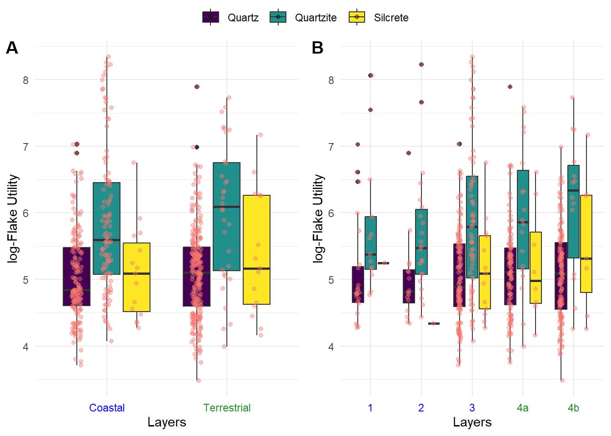
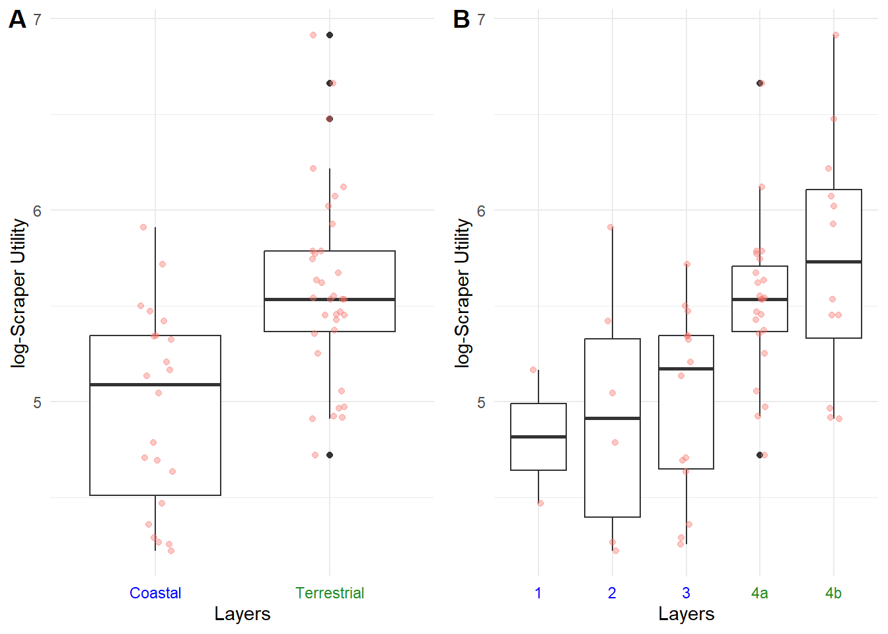

Steenbokfontein Preliminary Results
Methods
Here, we examine whether hunter-gatherer technological strategies changed as they increased their focus on coastal resources at Steenbokfontein (SBF). To accomplish this, we examine 1) raw material distribution and surplus, 2) lithic tool utility and reduction intensity, and 3) retouch intensity. These data inform us about where hunter-gatherers procured, transported, maintained, and discarded their lithic technology. Technological changes between coastal and terrestrial layers imply that hunter-gatherer coastal adaptations at SBF fundamentally changed their technological strategies.
Raw material and toolkit composition
Toolkit composition refers to the raw material distribution, surplus, and relationship between cores, flakes, and retouched tools. Raw material distribution and surplus are both directly linked to where hunter-gatherers procure, transport, and reduce their lithic tools (Andrefsky 1994, 2009; Binford, n.d.; Dibble et al. 2005; Kuhn 1992, 1994; Nelson 1991) . Shifts in local and non-local raw materials can inform us about changes in hunter-gatherer mobility patterns (Andrefsky 1994; Kelly 1983) . For instance, a reduction in non-local raw material may imply reduced hunter-gatherer movement across the landscape (Kelly 1992). To evaluate this pattern, we examine changes in the proportion of raw material over time at SBF. Shifts in raw material distribution and reduced mobility will likely reflect the amount of surplus hunter-gatherers store at SBF (Surovell 2009).
We use the relative size of lithics to evaluate whether raw material surplus changes between layers associated with coastal and terrestrial resource use (see Mackay 2009) . Firstly, we extract the 50th and 75th percentile of lithic mass for layers associated with coastal resource use and terrestrial resource use. Then, for each raw material, we contrast these percentiles against 1) all lithic mass, 2) only core mass, and 3) maximum core length. If the average mass or length intersect the 75th percentile, then there is more raw material surplus than we would expect in that layer. If the average mass or length is at the 50th percentile, then this reflects the average expectation for the layer. If the average mass or length fall below the 50th percentile, then this reflects less raw material surplus than we would expect. As hunter-gatherers focus on coastal resources, we expect raw material surplus to increase.
We can also use lithic density, number of flakes, cores, and retouched tools to explore the composition of toolkits. Changes in the frequency of flakes, cores, and retouched tools can inform us about mobility strategies and allude to site function (Kelly 1988, 1992; Nelson 1991) . For instance, an emphasis in retouched tools over flake production can suggest hunter-gatherer groups with higher mobility and a site that may be associated with logistical foraging patterns. Greater frequency of cores and flake production can reflect lower mobility and sites associated with residential patterns (Barton and Riel-Salvatore, n.d.; Binford, n.d.; Kelly 1992). To evaluate whether the composition of hunter-gatherer toolkits change as they focus on coastal resources, we look at 1) percent of retouched tools to lithic density, 2) retouched flakes-to-unmodified flakes, and 3) retouched flakes-to-cores.
Lithic tool utility and reduction intensity
Surovell (2009) and Kuhn (1994) explain lithic utility as the remaining portion of the lithic that can still be reduced. They define lithic utility for flakes (\(f_u\)) and retouched tools (\(f_u\)), as:
\[ f_u=l*(l-m) \]
where l is the length of the tool and m is the slug, or the smallest usable length for the tool. We use these equations to estimate the utility of lithics at SBF. However, since there are increasing occurrences of microlithic technologies in Africa and Europe that are measured less than one centimeter (e.g. Ambrose 2002; Belfer-Cohen and Goring-Morris 2002; Hiscock 2015; Mitchell 1988; Pargeter 2016) , subtracting by the slug is likely negligible.
We adopt Lombao et al.’s (2020; 2023) definition for reduction intensity as the amount of total volume removed from a core or tool. Previous studies have used several distinct metrics to quantify the degree of reduction intensity including volumetric reconstruction (Lombao et al. 2020; Lombao et al. 2023), scar density index (SDI) (Clarkson 2013) , and a comparison between core and flake size. Volumetric reconstruction and SDI both rely on core measurements and thus, the sample size is constrained on the number of cores and not flakes. Since we measure the utility for each flake, we choose the latter approach here. That is, we average each core’s maximum flake scar and subtract this by each flake’s technological length. From here, we can measure changes in lithic utility, reduction intensity, and the interaction between utility and reduction intensity through SBF.
Scraper utility and retouch intensity
Scrapers are the most abundant retouched tool at SBF and so, we explore how the utility and retouch intensity changes between layers associated with coastal and terrestrial resources. We use the same utility measurement described above to calculate scraper utility. Since all scrapers are unifacial, we adopt Eren et al.’s (2005; see also Kuhn 1990) approach to quantify the retouch intensity of unifacial tools (V). To accomplish this, we apply their geometric equation to all scrapers at SBF:
\[ V = \frac{L D^2}{2} \left( \sin^2(a) \cot(b) - \sin(a) \cos(a) \right) \]
where L is the length of the retouched edge, D is the retouched length, a is the retouched angle, and b is the angle where the central and dorsal planes meet. With these metrics, we can measure shifts in scraper utility, retouch intensity, and their interaction through time at SBF.
Results
Raw material distribution
Table 1 and Figure 1 show the distribution of artifact type by raw material. Figure 1 shows the raw material distribution by individual layer and lumped into layers associated with coastal (layers 1-3) and terrestrial diets (layers 4a and 4b). These data suggest that, as hunter-gatherer focus on coastal resources, there is a decrease in the proportion of retouched tools for all raw materials and increase in cores (Figure 1 (a)) . Figure 1 (b) shows a more nuanced raw material pattern. As silcrete cores decrease towards layer 2, there is an increase in quartzite cores. At the same time, silcrete and quartz retouched tools increase during layer 2. Additionally, table 1 shows a general decrease in silcrete materials through SBF, implying hunter-gatherers reduced the amount of silcrete brought into SBF. Together, these patterns reflect shifts in hunter-gatherer toolkits and raw material transportation when diets become centered around coastal foods.
An analysis of cortical-to-noncortical flakes (Figure 2) further implies significant shifts in raw material transport. Figure 2 (a) shows that silcrete has the lowest cortical-to-noncortical ratios for layers associated with terrestrial diets, suggesting greater cortical silcrete. As hunter-gatherers focused on coastal resources, silcrete reflects similar ratios for quartz and quartzite. Figure 2 (b) shows a general decrease in quartz ratios through SBF, implying a greater proportion of non-cortical quartz flakes through time. These shifts in cortical-to-noncortical ratios confirm that hunter-gatherer modified where they procured raw material and where, on the landscape, they removed cortical pieces before transporting them into SBF.
Quartz
|
Quartzite
|
Silcrete
|
||||||||||
|---|---|---|---|---|---|---|---|---|---|---|---|---|
| N | Core N = 741 |
Flake N = 5561 |
Retouched tools N = 1511 |
N | Core N = 161 |
Flake N = 1631 |
Retouched tools N = 171 |
N | Core N = 161 |
Flake N = 511 |
Retouched tools N = 281 |
|
| Layer | 781 | 196 | 95 | |||||||||
| 1 | 7 (9.5%) | 35 (6.3%) | 7 (4.6%) | 2 (13%) | 15 (9.2%) | 0 (0%) | 0 (0%) | 4 (7.8%) | 1 (3.6%) | |||
| 2 | 3 (4.1%) | 24 (4.3%) | 14 (9.3%) | 8 (50%) | 27 (17%) | 6 (35%) | 0 (0%) | 2 (3.9%) | 3 (11%) | |||
| 3 | 28 (38%) | 173 (31%) | 40 (26%) | 5 (31%) | 89 (55%) | 6 (35%) | 8 (50%) | 21 (41%) | 7 (25%) | |||
| 4a | 18 (24%) | 141 (25%) | 56 (37%) | 1 (6.3%) | 18 (11%) | 3 (18%) | 3 (19%) | 12 (24%) | 5 (18%) | |||
| 4b | 18 (24%) | 183 (33%) | 34 (23%) | 0 (0%) | 14 (8.6%) | 2 (12%) | 5 (31%) | 12 (24%) | 12 (43%) | |||
| 1 n (%) | ||||||||||||
Raw material surplus
Figure 3 explore the relationship between raw material surplus and raw material distribution. Firstly, the 50th and 75th percentile for all artifact mass (Figure 3) is not significantly different, implying identically distributed distributions for artifact mass when between layers associated with coastal and terrestrial resource consumption. A Bayesian ANOVA shows no significant shifts within raw materials between layers, but there are significant difference between raw materials. Specifically, quartzite and secrete are consistently above the 75th percentile in both the grouped (a) and individual layers (b). This suggests there was a greater surplus of quartzite and silcrete at SBF, but this is not correlated with terrestrial or coastal diets.
Figure 4 and Figure 5 explore the relationship between raw material surplus, core mass, and core maximum length. Here, there is a significant difference between the mass and maximum length between layers associated with coastal and terrestrial resource use. In both figures, the terrestrial layers have, on average, smaller cores than layers associated with coastal resource use. A reduced sample size for cores increases the statistical uncertainty, but the posterior distribution for a Bayesian ANOVA still suggests no significant difference within raw material with significant shifts between raw material through SBF. Compared with the 50th and 75th percentile, quartzite and silcrete align with the 75th percentile for every layer. However, for terrestrial layers, quartz cores fall in line with the 50th percentile but fall well below this threshold when hunter-gatherers focus on coastal resources. Overall, quartzite and silcrete have, on average, larger cores while the quartz cores are significantly smaller. Moreover, quartz cores are well below average size when hunter-gatherers focus on coastal resources, which may imply reduced quartz resource surplus during these intervals.

Toolkit composition
Figure 6 shows the relationship between the percent of formal tools and lithic density through SBF. The expectation is that more formal tools and lower lithic density reflects hunter-gatherers that move more frequently. Fewer formal tools and a higher lithic density reflects hunter-gatherers with lower mobility strategies. Figure 6 implies the layers associated with coastal resource exploitation (1, 2, and 3) are associated with higher mobility and the layers associated with terrestrial resources (4a and 4b) are associated with lower mobility.
Figure 7 explores the relationship between retouched flakes, flakes, and cores. Figure 7 shows that the ratios for retouched flake-to-flake and retouched flake-to-core increase towards layers 1, 2, and 3. These data suggest that hunter-gatherers either 1) invested in more retouched tools or 2) carried more retouched tools into SBF during layers associated with coastal resources use (1, 2, and 3). In both cases, the expectation is that a greater emphasis in retouched tools reflects more mobile hunter-gatherers. These data show distinct changes in toolkits through SBF as hunter-gatherer begin to focus on coastal resources.
Flake utility and reduction intensity
Figure 8 and Figure 9 show the distribution between remaining flake utility and reduction intensity of quartz, quartzite, and silcrete. A Bayesian ANOVA for Figure 8 and Figure 9 both suggest that flake utility and reduction intensity is significantly different between raw materials but not within the raw material types across SBF’s layers. Specifically, though Figure 8 (A) shows no significant difference within raw materials, (B) shows a general decreasing trend in quartzite and silcrete utility as hunter-gatherers focus on coastal resources. Figure 9 shows a similar pattern that shows a decrease in reduction intensity as hunter-gatherers focus on coastal resources. These data imply and reaffirm that hunter-gatherers modified the way they managed their local raw material (quartzite) and more distantly sourced raw material (silcrete) as they increased their coastal resource consumption.
To evaluate how hunter-gatherers managed flake utility and reduction intensity together, we calculated the ratio between utility and reduction intensity (Figure 10). An ANOVA, again, shows a significant difference between raw materials but not within raw materials through SBF’s sequence for grouped and individual layers. Specifically, quartzite has greater utility to reduction intensity than do quartz and silcrete materials. But overall, these results imply no significant changes in how hunter-gatherers managed flake utility and reduction intensity when they increased coastal resource use.

Scraper utility and retouch intensity
Figure 11 and Figure 12 both suggests there is a relationship between scraper retouch and whether hunter-gatherers are focused on coastal resources. Figure 11 and a Bayesian ANOVA show no significant difference between raw materials. Since both raw materials are fine-grained and are not statistically different, Figure 12 contains both quartz and silcrete. A Bayesian ANOVA for Figure 12 suggests that there is a significant difference between layers associated with coastal (1-3) and terrestrial resources (4a and 4b). Specifically, scrapers show lower reduction intensity during periods associated with coastal resource use. These data imply that, as hunter-gatherers focused on coastal resources, there were significant shifts in how scrapers were reduced at SBF.
Figure 13 shows the relationship between scraper utility and coastal resource use, including both quartz and silcrete. A Bayesian ANOVA suggests that there is a significant difference between layers associated with coastal (1-3) and terrestrial (4a and 4b) resource use. As hunter-gatherer focus on coastal resources, there is a significant shift in scrapers that have a lower utility. In other words, the scrapers have lower surface area during layers associated with coastal resources.
Lastly, Figure 14 illustrates the relationship between scraper utility and retouch intensity through SBF. Again, we see lower values during periods associated with coastal resource use, which suggests a greater amount of retouch for smaller scrapers. However, a Bayesian ANOVA suggests that there is no significant difference between layers grouped into coastal and terrestrial resource use (Figure 14 (A)). Layer 1 appears to be the only significantly different relationship between retouch intensity and flake utility. Ultimately, these results suggest that, while retouch intensity and utility significantly change through SBF, there is no noticeable change in how hunter-gatherers managed these metrics until layer 1.

Supplemental Tables
Raw material surplus
| Contrast | Estimate | Lower CI | Upper CI |
|---|---|---|---|
| Coastal Quartz - Terrestrial Quartz | -0.1756143 | -0.3532481 | 0.0108428 |
| Coastal Quartz - Coastal Quartzite | -1.9713607 | -2.2108071 | -1.7278950 |
| Coastal Quartz - Terrestrial Quartzite | -2.0262943 | -2.4848195 | -1.6043041 |
| Coastal Quartz - Coastal Silcrete | -1.0362722 | -1.4372261 | -0.6698255 |
| Coastal Quartz - Terrestrial Silcrete | -1.3069016 | -1.7094528 | -0.9189951 |
| Terrestrial Quartz - Coastal Quartzite | -1.7952085 | -2.0320818 | -1.5654199 |
| Terrestrial Quartz - Terrestrial Quartzite | -1.8507436 | -2.3088303 | -1.4372093 |
| Terrestrial Quartz - Coastal Silcrete | -0.8606053 | -1.2587402 | -0.4970890 |
| Terrestrial Quartz - Terrestrial Silcrete | -1.1299977 | -1.5331876 | -0.7678700 |
| Coastal Quartzite - Terrestrial Quartzite | -0.0546469 | -0.5156737 | 0.3897723 |
| Coastal Quartzite - Coastal Silcrete | 0.9336430 | 0.5067753 | 1.3387421 |
| Coastal Quartzite - Terrestrial Silcrete | 0.6638733 | 0.2417315 | 1.0698718 |
| Terrestrial Quartzite - Coastal Silcrete | 0.9885243 | 0.4238837 | 1.5274456 |
| Terrestrial Quartzite - Terrestrial Silcrete | 0.7219023 | 0.1883293 | 1.2898523 |
| Coastal Silcrete - Terrestrial Silcrete | -0.2697505 | -0.7912230 | 0.2274478 |
| Contrast | Estimate | Lower CI | Upper CI |
|---|---|---|---|
| 1 Quartz - 2 Quartz | 0.4930400 | 0.0660440 | 0.9317241 |
| 1 Quartz - 3 Quartz | 0.4466861 | 0.1175259 | 0.7955349 |
| 1 Quartz - 4a Quartz | 0.0444550 | -0.3116106 | 0.3996268 |
| 1 Quartz - 4b Quartz | 0.3230240 | -0.0288314 | 0.6762217 |
| 1 Quartz - 1 Quartzite | -1.1026161 | -1.5201263 | -0.6978021 |
| 1 Quartz - 2 Quartzite | -2.0349145 | -2.6074135 | -1.5216281 |
| 1 Quartz - 3 Quartzite | -1.7319185 | -2.1541616 | -1.3116963 |
| 1 Quartz - 4a Quartzite | -1.6577848 | -2.3116247 | -1.0624936 |
| 1 Quartz - 4b Quartzite | -1.5549962 | -2.2809739 | -0.8799863 |
| 1 Quartz - 1 Silcrete | -0.1339387 | -0.7828318 | 0.4788672 |
| 1 Quartz - 2 Silcrete | 0.3718191 | -0.6015729 | 1.2585247 |
| 1 Quartz - 3 Silcrete | -0.8177632 | -1.3509836 | -0.2754078 |
| 1 Quartz - 4a Silcrete | -0.5177843 | -1.2175898 | 0.1462927 |
| 1 Quartz - 4b Silcrete | -1.2264346 | -1.8240419 | -0.6787281 |
| 2 Quartz - 3 Quartz | -0.0510594 | -0.4289037 | 0.3236780 |
| 2 Quartz - 4a Quartz | -0.4484433 | -0.8146748 | -0.0490675 |
| 2 Quartz - 4b Quartz | -0.1703816 | -0.5669591 | 0.1951716 |
| 2 Quartz - 1 Quartzite | -1.5995000 | -2.1340135 | -1.0729959 |
| 2 Quartz - 2 Quartzite | -2.5341158 | -3.0644451 | -2.0321304 |
| 2 Quartz - 3 Quartzite | -2.2290202 | -2.6762616 | -1.8043454 |
| 2 Quartz - 4a Quartzite | -2.1536985 | -2.8147928 | -1.5339304 |
| 2 Quartz - 4b Quartzite | -2.0593786 | -2.7559256 | -1.3403394 |
| 2 Quartz - 1 Silcrete | -0.6244294 | -1.3632046 | 0.1208936 |
| 2 Quartz - 2 Silcrete | -0.1208212 | -1.0266582 | 0.6723825 |
| 2 Quartz - 3 Silcrete | -1.3120072 | -1.8799587 | -0.7762533 |
| 2 Quartz - 4a Silcrete | -1.0141080 | -1.7232385 | -0.3316877 |
| 2 Quartz - 4b Silcrete | -1.7228392 | -2.3106274 | -1.1610239 |
| 3 Quartz - 4a Quartz | -0.3997896 | -0.6336292 | -0.1665337 |
| 3 Quartz - 4b Quartz | -0.1224159 | -0.3587059 | 0.1059395 |
| 3 Quartz - 1 Quartzite | -1.5513802 | -1.9823002 | -1.1416519 |
| 3 Quartz - 2 Quartzite | -2.4841305 | -2.9452339 | -2.0320519 |
| 3 Quartz - 3 Quartzite | -2.1802880 | -2.4810379 | -1.8674041 |
| 3 Quartz - 4a Quartzite | -2.1028747 | -2.6600619 | -1.5489579 |
| 3 Quartz - 4b Quartzite | -2.0041117 | -2.6753915 | -1.3952576 |
| 3 Quartz - 1 Silcrete | -0.5820487 | -1.2643041 | 0.0358058 |
| 3 Quartz - 2 Silcrete | -0.0735528 | -0.9553009 | 0.7823063 |
| 3 Quartz - 3 Silcrete | -1.2642900 | -1.7266919 | -0.8219727 |
| 3 Quartz - 4a Silcrete | -0.9657003 | -1.6212935 | -0.3679432 |
| 3 Quartz - 4b Silcrete | -1.6752192 | -2.1943939 | -1.1959727 |
| 4a Quartz - 4b Quartz | 0.2783664 | 0.0284020 | 0.5119794 |
| 4a Quartz - 1 Quartzite | -1.1517529 | -1.5803502 | -0.7431397 |
| 4a Quartz - 2 Quartzite | -2.0799677 | -2.5659914 | -1.6332112 |
| 4a Quartz - 3 Quartzite | -1.7765715 | -2.1095065 | -1.4731927 |
| 4a Quartz - 4a Quartzite | -1.7000228 | -2.2871818 | -1.1764733 |
| 4a Quartz - 4b Quartzite | -1.6083951 | -2.2490421 | -0.9585570 |
| 4a Quartz - 1 Silcrete | -0.1825314 | -0.8181509 | 0.5010395 |
| 4a Quartz - 2 Silcrete | 0.3244405 | -0.5843266 | 1.1460686 |
| 4a Quartz - 3 Silcrete | -0.8650394 | -1.3518096 | -0.4304048 |
| 4a Quartz - 4a Silcrete | -0.5640429 | -1.2211325 | 0.0313495 |
| 4a Quartz - 4b Silcrete | -1.2766245 | -1.8075259 | -0.7914363 |
| 4b Quartz - 1 Quartzite | -1.4292806 | -1.8531210 | -1.0188270 |
| 4b Quartz - 2 Quartzite | -2.3596663 | -2.8385040 | -1.9245393 |
| 4b Quartz - 3 Quartzite | -2.0581949 | -2.3699335 | -1.7395289 |
| 4b Quartz - 4a Quartzite | -1.9835642 | -2.5542849 | -1.4356474 |
| 4b Quartz - 4b Quartzite | -1.8879857 | -2.5551278 | -1.2763943 |
| 4b Quartz - 1 Silcrete | -0.4564277 | -1.1233046 | 0.1847748 |
| 4b Quartz - 2 Silcrete | 0.0447630 | -0.8598655 | 0.8678802 |
| 4b Quartz - 3 Silcrete | -1.1416194 | -1.6209726 | -0.6985186 |
| 4b Quartz - 4a Silcrete | -0.8427572 | -1.4613217 | -0.2020426 |
| 4b Quartz - 4b Silcrete | -1.5525390 | -2.0755912 | -1.0829298 |
| 1 Quartzite - 2 Quartzite | -0.9340297 | -1.4819519 | -0.4115906 |
| 1 Quartzite - 3 Quartzite | -0.6275891 | -1.0758455 | -0.1795608 |
| 1 Quartzite - 4a Quartzite | -0.5548737 | -1.2010916 | 0.0888364 |
| 1 Quartzite - 4b Quartzite | -0.4565564 | -1.2413607 | 0.1868693 |
| 1 Quartzite - 1 Silcrete | 0.9677072 | 0.2397307 | 1.6854142 |
| 1 Quartzite - 2 Silcrete | 1.4785073 | 0.4908018 | 2.3812510 |
| 1 Quartzite - 3 Silcrete | 0.2878088 | -0.3045917 | 0.8522842 |
| 1 Quartzite - 4a Silcrete | 0.5830754 | -0.1335619 | 1.2910258 |
| 1 Quartzite - 4b Silcrete | -0.1215873 | -0.7799927 | 0.4526059 |
| 2 Quartzite - 3 Quartzite | 0.2992136 | -0.2005384 | 0.8093114 |
| 2 Quartzite - 4a Quartzite | 0.3752106 | -0.3169640 | 1.0573375 |
| 2 Quartzite - 4b Quartzite | 0.4759195 | -0.2956105 | 1.2168033 |
| 2 Quartzite - 1 Silcrete | 1.9053372 | 1.1179119 | 2.6674290 |
| 2 Quartzite - 2 Silcrete | 2.4112740 | 1.4708944 | 3.3369396 |
| 2 Quartzite - 3 Silcrete | 1.2162794 | 0.6144352 | 1.8519581 |
| 2 Quartzite - 4a Silcrete | 1.5261886 | 0.7506593 | 2.2194336 |
| 2 Quartzite - 4b Silcrete | 0.8040122 | 0.1766207 | 1.4315768 |
| 3 Quartzite - 4a Quartzite | 0.0791672 | -0.4976651 | 0.6768594 |
| 3 Quartzite - 4b Quartzite | 0.1730117 | -0.5470504 | 0.7941139 |
| 3 Quartzite - 1 Silcrete | 1.6023511 | 0.8914585 | 2.2735623 |
| 3 Quartzite - 2 Silcrete | 2.1124337 | 1.1947695 | 2.9681833 |
| 3 Quartzite - 3 Silcrete | 0.9138366 | 0.4125520 | 1.4168681 |
| 3 Quartzite - 4a Silcrete | 1.2125284 | 0.5306266 | 1.8273336 |
| 3 Quartzite - 4b Silcrete | 0.5021171 | -0.0360064 | 1.0535295 |
| 4a Quartzite - 4b Quartzite | 0.0912247 | -0.7226852 | 0.8929089 |
| 4a Quartzite - 1 Silcrete | 1.5287324 | 0.6985397 | 2.3669170 |
| 4a Quartzite - 2 Silcrete | 2.0359246 | 1.0619988 | 3.0921609 |
| 4a Quartzite - 3 Silcrete | 0.8376572 | 0.1427276 | 1.5247339 |
| 4a Quartzite - 4a Silcrete | 1.1406295 | 0.3053945 | 1.9030722 |
| 4a Quartzite - 4b Silcrete | 0.4280969 | -0.2898748 | 1.1608039 |
| 4b Quartzite - 1 Silcrete | 1.4273702 | 0.5469556 | 2.2946565 |
| 4b Quartzite - 2 Silcrete | 1.9361025 | 0.8616946 | 2.9792914 |
| 4b Quartzite - 3 Silcrete | 0.7445434 | -0.0243266 | 1.5025561 |
| 4b Quartzite - 4a Silcrete | 1.0360646 | 0.1878110 | 1.9050732 |
| 4b Quartzite - 4b Silcrete | 0.3284050 | -0.4672416 | 1.0940821 |
| 1 Silcrete - 2 Silcrete | 0.5013696 | -0.3602247 | 1.3742801 |
| 1 Silcrete - 3 Silcrete | -0.6860201 | -1.4417449 | 0.0275432 |
| 1 Silcrete - 4a Silcrete | -0.3926701 | -1.2387277 | 0.4210245 |
| 1 Silcrete - 4b Silcrete | -1.0999214 | -1.8192007 | -0.2818258 |
| 2 Silcrete - 3 Silcrete | -1.1921362 | -2.1383323 | -0.2563403 |
| 2 Silcrete - 4a Silcrete | -0.8916266 | -1.8980286 | 0.1790157 |
| 2 Silcrete - 4b Silcrete | -1.6090038 | -2.5307182 | -0.6223900 |
| 3 Silcrete - 4a Silcrete | 0.3031087 | -0.4506556 | 0.9941786 |
| 3 Silcrete - 4b Silcrete | -0.4144502 | -1.0369795 | 0.2156096 |
| 4a Silcrete - 4b Silcrete | -0.7103404 | -1.4544003 | 0.0745089 |
| Contrast | Estimate | Lower CI | Upper CI |
|---|---|---|---|
| Coastal Quartz - Terrestrial Quartz | 0.1419122 | -0.3001688 | 0.5656534 |
| Coastal Quartz - Coastal Quartzite | -2.0132280 | -2.6415099 | -1.4246399 |
| Coastal Quartz - Terrestrial Quartzite | -3.7011179 | -5.3512146 | -2.1250139 |
| Coastal Quartz - Coastal Silcrete | -1.2434262 | -1.9650309 | -0.5800825 |
| Coastal Quartz - Terrestrial Silcrete | -1.6212067 | -2.5027412 | -0.8520688 |
| Terrestrial Quartz - Coastal Quartzite | -2.1556852 | -2.8194600 | -1.5184659 |
| Terrestrial Quartz - Terrestrial Quartzite | -3.8473761 | -5.5093358 | -2.4052133 |
| Terrestrial Quartz - Coastal Silcrete | -1.3908369 | -2.1314467 | -0.6454650 |
| Terrestrial Quartz - Terrestrial Silcrete | -1.7599655 | -2.5952846 | -0.9863947 |
| Coastal Quartzite - Terrestrial Quartzite | -1.6939399 | -3.2910584 | -0.2075953 |
| Coastal Quartzite - Coastal Silcrete | 0.7721481 | -0.0726419 | 1.6383671 |
| Coastal Quartzite - Terrestrial Silcrete | 0.3936956 | -0.5875026 | 1.2817950 |
| Terrestrial Quartzite - Coastal Silcrete | 2.4595085 | 0.7619893 | 4.1688348 |
| Terrestrial Quartzite - Terrestrial Silcrete | 2.0803828 | 0.3959099 | 3.8877994 |
| Coastal Silcrete - Terrestrial Silcrete | -0.3712235 | -1.2692986 | 0.6245993 |
| Contrast | Estimate | Lower CI | Upper CI |
|---|---|---|---|
| 1 Quartz - 2 Quartz | 1.2428270 | 0.2216414 | 2.1501393 |
| 1 Quartz - 3 Quartz | -0.2072504 | -0.8108031 | 0.3966019 |
| 1 Quartz - 4a Quartz | 0.3587342 | -0.3038560 | 1.0255162 |
| 1 Quartz - 4b Quartz | -0.2113838 | -0.8821825 | 0.4625009 |
| 1 Quartz - 1 Quartzite | -1.6762090 | -2.3932740 | -1.0255807 |
| 1 Quartz - 2 Quartzite | -2.6948429 | -3.8265427 | -1.7620162 |
| 1 Quartz - 3 Quartzite | -4.0060388 | -5.3110606 | -2.7632737 |
| 1 Quartz - 4a Quartzite | -2.9874051 | -4.4672370 | -1.6459602 |
| 1 Quartz - 4b Quartzite | -2.8815867 | -5.1630602 | -0.8147248 |
| 1 Quartz - 1 Silcrete | 0.1751439 | -0.9454473 | 1.2124898 |
| 1 Quartz - 2 Silcrete | 1.4165574 | -0.3929235 | 3.1564179 |
| 1 Quartz - 3 Silcrete | -1.4605827 | -2.3432235 | -0.6095531 |
| 1 Quartz - 4a Silcrete | -0.7495939 | -2.2287775 | 0.4937851 |
| 1 Quartz - 4b Silcrete | -2.0782435 | -3.1724534 | -1.1475536 |
| 2 Quartz - 3 Quartz | -1.4455584 | -2.3579366 | -0.4129086 |
| 2 Quartz - 4a Quartz | -0.8817454 | -1.8972267 | 0.1612678 |
| 2 Quartz - 4b Quartz | -1.4521518 | -2.4286309 | -0.3621673 |
| 2 Quartz - 1 Quartzite | -2.9219447 | -4.1289416 | -1.6278403 |
| 2 Quartz - 2 Quartzite | -3.9547727 | -4.8965367 | -2.9985918 |
| 2 Quartz - 3 Quartzite | -5.2492652 | -6.7642752 | -3.7054072 |
| 2 Quartz - 4a Quartzite | -4.2219509 | -5.8755404 | -2.5980316 |
| 2 Quartz - 4b Quartzite | -4.1210396 | -6.4678184 | -1.7311282 |
| 2 Quartz - 1 Silcrete | -1.0606733 | -2.5923595 | 0.3707577 |
| 2 Quartz - 2 Silcrete | 0.1829768 | -1.3010209 | 1.6175467 |
| 2 Quartz - 3 Silcrete | -2.7038506 | -3.8031812 | -1.4899115 |
| 2 Quartz - 4a Silcrete | -2.0108145 | -3.5975496 | -0.4378644 |
| 2 Quartz - 4b Silcrete | -3.3362191 | -4.6086545 | -2.0117072 |
| 3 Quartz - 4a Quartz | 0.5676252 | -0.1024729 | 1.1597206 |
| 3 Quartz - 4b Quartz | -0.0021063 | -0.6574763 | 0.5918926 |
| 3 Quartz - 1 Quartzite | -1.4691025 | -2.3034495 | -0.6143012 |
| 3 Quartz - 2 Quartzite | -2.4951306 | -3.5351837 | -1.5825769 |
| 3 Quartz - 3 Quartzite | -3.7984111 | -4.9445648 | -2.7481303 |
| 3 Quartz - 4a Quartzite | -2.7636098 | -4.2451974 | -1.4905979 |
| 3 Quartz - 4b Quartzite | -2.6680944 | -4.7793071 | -0.5227581 |
| 3 Quartz - 1 Silcrete | 0.3819381 | -0.9019256 | 1.6246769 |
| 3 Quartz - 2 Silcrete | 1.6305747 | -0.1449789 | 3.4477671 |
| 3 Quartz - 3 Silcrete | -1.2487550 | -2.0577897 | -0.4593269 |
| 3 Quartz - 4a Silcrete | -0.5468586 | -2.0013352 | 0.6712807 |
| 3 Quartz - 4b Silcrete | -1.8744233 | -2.8995864 | -0.9193163 |
| 4a Quartz - 4b Quartz | -0.5705247 | -1.2352468 | 0.1706656 |
| 4a Quartz - 1 Quartzite | -2.0346764 | -2.9337675 | -1.1631461 |
| 4a Quartz - 2 Quartzite | -3.0605512 | -4.1516403 | -2.0814457 |
| 4a Quartz - 3 Quartzite | -4.3613398 | -5.6940937 | -3.1860449 |
| 4a Quartz - 4a Quartzite | -3.3383980 | -4.6704309 | -2.0191378 |
| 4a Quartz - 4b Quartzite | -3.2262538 | -5.3934600 | -1.0039191 |
| 4a Quartz - 1 Silcrete | -0.1701740 | -1.5097517 | 1.0885234 |
| 4a Quartz - 2 Silcrete | 1.0676221 | -0.8750084 | 2.7714960 |
| 4a Quartz - 3 Silcrete | -1.8204379 | -2.7207960 | -0.9587381 |
| 4a Quartz - 4a Silcrete | -1.1120717 | -2.4809364 | 0.1867565 |
| 4a Quartz - 4b Silcrete | -2.4434215 | -3.4941791 | -1.4396493 |
| 4b Quartz - 1 Quartzite | -1.4643003 | -2.3843531 | -0.6027424 |
| 4b Quartz - 2 Quartzite | -2.4846702 | -3.5949016 | -1.5348683 |
| 4b Quartz - 3 Quartzite | -3.7877521 | -5.0408825 | -2.5491782 |
| 4b Quartz - 4a Quartzite | -2.7668400 | -4.1415225 | -1.3099418 |
| 4b Quartz - 4b Quartzite | -2.6701028 | -4.7131386 | -0.6493398 |
| 4b Quartz - 1 Silcrete | 0.3889279 | -0.9120837 | 1.7167841 |
| 4b Quartz - 2 Silcrete | 1.6410416 | -0.2210065 | 3.4402842 |
| 4b Quartz - 3 Silcrete | -1.2474802 | -2.1933617 | -0.3969603 |
| 4b Quartz - 4a Silcrete | -0.5403464 | -2.0197472 | 0.7468029 |
| 4b Quartz - 4b Silcrete | -1.8687297 | -2.9113995 | -0.9532778 |
| 1 Quartzite - 2 Quartzite | -1.0333586 | -2.0983768 | -0.0504458 |
| 1 Quartzite - 3 Quartzite | -2.3309578 | -3.4114535 | -1.2752033 |
| 1 Quartzite - 4a Quartzite | -1.3160385 | -2.7758347 | 0.0118521 |
| 1 Quartzite - 4b Quartzite | -1.1937441 | -3.2991069 | 0.8054692 |
| 1 Quartzite - 1 Silcrete | 1.8617350 | 0.4529344 | 3.0513373 |
| 1 Quartzite - 2 Silcrete | 3.1063074 | 1.1033951 | 5.0059225 |
| 1 Quartzite - 3 Silcrete | 0.2212009 | -0.8082074 | 1.2494324 |
| 1 Quartzite - 4a Silcrete | 0.9140863 | -0.5864885 | 2.3659542 |
| 1 Quartzite - 4b Silcrete | -0.4110345 | -1.5999286 | 0.6976853 |
| 2 Quartzite - 3 Quartzite | -1.2939255 | -2.5933363 | 0.0578344 |
| 2 Quartzite - 4a Quartzite | -0.2824810 | -1.9248377 | 1.2351243 |
| 2 Quartzite - 4b Quartzite | -0.1588841 | -2.5113654 | 1.9641534 |
| 2 Quartzite - 1 Silcrete | 2.9001685 | 1.4043636 | 4.3988341 |
| 2 Quartzite - 2 Silcrete | 4.1432852 | 2.3349760 | 5.7876144 |
| 2 Quartzite - 3 Silcrete | 1.2324079 | 0.1159466 | 2.4409980 |
| 2 Quartzite - 4a Silcrete | 1.9404825 | 0.2678941 | 3.4482736 |
| 2 Quartzite - 4b Silcrete | 0.6108689 | -0.6665380 | 1.9112008 |
| 3 Quartzite - 4a Quartzite | 1.0228104 | -0.6576806 | 2.6333829 |
| 3 Quartzite - 4b Quartzite | 1.1319846 | -1.0213149 | 3.3941920 |
| 3 Quartzite - 1 Silcrete | 4.1889019 | 2.4502002 | 5.8660176 |
| 3 Quartzite - 2 Silcrete | 5.4534225 | 3.1997874 | 7.4721189 |
| 3 Quartzite - 3 Silcrete | 2.5478934 | 1.2315930 | 3.8873888 |
| 3 Quartzite - 4a Silcrete | 3.2423212 | 1.4940132 | 4.8982692 |
| 3 Quartzite - 4b Silcrete | 1.9165832 | 0.4544873 | 3.3488587 |
| 4a Quartzite - 4b Quartzite | 0.1388240 | -2.3126951 | 2.5176473 |
| 4a Quartzite - 1 Silcrete | 3.1722663 | 1.2815519 | 4.8512086 |
| 4a Quartzite - 2 Silcrete | 4.4065648 | 2.1839484 | 6.6427564 |
| 4a Quartzite - 3 Silcrete | 1.5175024 | -0.0122917 | 3.0298146 |
| 4a Quartzite - 4a Silcrete | 2.2290696 | 0.3671586 | 4.0863557 |
| 4a Quartzite - 4b Silcrete | 0.9007347 | -0.7126256 | 2.5338922 |
| 4b Quartzite - 1 Silcrete | 3.0744234 | 0.5589135 | 5.4548662 |
| 4b Quartzite - 2 Silcrete | 4.3176321 | 1.4560281 | 7.0379302 |
| 4b Quartzite - 3 Silcrete | 1.3962206 | -0.8093576 | 3.6803679 |
| 4b Quartzite - 4a Silcrete | 2.1010799 | -0.4877215 | 4.4806693 |
| 4b Quartzite - 4b Silcrete | 0.7829492 | -1.4181358 | 3.1266503 |
| 1 Silcrete - 2 Silcrete | 1.2432201 | -0.1610694 | 2.6212819 |
| 1 Silcrete - 3 Silcrete | -1.6548022 | -2.9277194 | -0.3841566 |
| 1 Silcrete - 4a Silcrete | -0.9574750 | -2.4796758 | 0.4809829 |
| 1 Silcrete - 4b Silcrete | -2.2742272 | -3.5526327 | -0.9142855 |
| 2 Silcrete - 3 Silcrete | -2.9011357 | -4.6786224 | -1.0915038 |
| 2 Silcrete - 4a Silcrete | -2.2108727 | -4.1058434 | -0.2162320 |
| 2 Silcrete - 4b Silcrete | -3.5215111 | -5.2559297 | -1.5717255 |
| 3 Silcrete - 4a Silcrete | 0.7063415 | -0.8653865 | 2.0639611 |
| 3 Silcrete - 4b Silcrete | -0.6227604 | -1.8306428 | 0.4687508 |
| 4a Silcrete - 4b Silcrete | -1.3315394 | -2.8605463 | 0.1992022 |
| Contrast | Estimate | Lower CI | Upper CI |
|---|---|---|---|
| Coastal Quartz - Terrestrial Quartz | -0.3732939 | -0.8497742 | 0.0936580 |
| Coastal Quartz - Coastal Quartzite | -2.7211049 | -3.3893151 | -2.0466799 |
| Coastal Quartz - Terrestrial Quartzite | -5.3910078 | -7.0655570 | -3.7596915 |
| Coastal Quartz - Coastal Silcrete | -1.4992989 | -2.2782156 | -0.7239410 |
| Coastal Quartz - Terrestrial Silcrete | -2.2477379 | -3.1245272 | -1.3340817 |
| Terrestrial Quartz - Coastal Quartzite | -2.3477055 | -3.0273933 | -1.6247811 |
| Terrestrial Quartz - Terrestrial Quartzite | -5.0121229 | -6.5947292 | -3.4554377 |
| Terrestrial Quartz - Coastal Silcrete | -1.1175311 | -1.9664979 | -0.2526210 |
| Terrestrial Quartz - Terrestrial Silcrete | -1.8675060 | -2.8007953 | -1.0788722 |
| Coastal Quartzite - Terrestrial Quartzite | -2.6597986 | -4.2645258 | -1.1531468 |
| Coastal Quartzite - Coastal Silcrete | 1.2221380 | 0.2807487 | 2.1863158 |
| Coastal Quartzite - Terrestrial Silcrete | 0.4754506 | -0.5237210 | 1.4245107 |
| Terrestrial Quartzite - Coastal Silcrete | 3.8958714 | 2.1784231 | 5.7101582 |
| Terrestrial Quartzite - Terrestrial Silcrete | 3.1304983 | 1.3317680 | 4.8353869 |
| Coastal Silcrete - Terrestrial Silcrete | -0.7461533 | -1.7889497 | 0.2443693 |
| Contrast | Estimate | Lower CI | Upper CI |
|---|---|---|---|
| 1 Quartz - 2 Quartz | -1.4339283 | -2.2728008 | -0.6774931 |
| 1 Quartz - 3 Quartz | -1.4273561 | -2.0847687 | -0.7949854 |
| 1 Quartz - 4a Quartz | -1.2012341 | -2.0452893 | -0.4269368 |
| 1 Quartz - 4b Quartz | -1.4761565 | -2.3180697 | -0.6762396 |
| 1 Quartz - 1 Quartzite | -1.5415388 | -2.2358958 | -0.8381487 |
| 1 Quartz - 2 Quartzite | -4.9319920 | -5.8884510 | -3.8632797 |
| 1 Quartz - 3 Quartzite | -4.9723361 | -6.2012280 | -3.9001019 |
| 1 Quartz - 4a Quartzite | -5.6630150 | -7.4649925 | -3.8561021 |
| 1 Quartz - 4b Quartzite | -6.0172964 | -8.3189949 | -3.7929261 |
| 1 Quartz - 1 Silcrete | 0.2286686 | -0.9027213 | 1.3268354 |
| 1 Quartz - 2 Silcrete | -1.2009031 | -3.4778945 | 1.2731387 |
| 1 Quartz - 3 Silcrete | -3.0969695 | -4.1818016 | -2.0791760 |
| 1 Quartz - 4a Silcrete | -2.5409934 | -4.0807337 | -1.1574364 |
| 1 Quartz - 4b Silcrete | -3.5259226 | -4.7271291 | -2.2709203 |
| 2 Quartz - 3 Quartz | 0.0033503 | -0.8929310 | 0.8890289 |
| 2 Quartz - 4a Quartz | 0.2294663 | -0.7600635 | 1.2621507 |
| 2 Quartz - 4b Quartz | -0.0538648 | -1.0549348 | 0.9308713 |
| 2 Quartz - 1 Quartzite | -0.1102100 | -1.2431686 | 1.0254346 |
| 2 Quartz - 2 Quartzite | -3.4936644 | -4.4707814 | -2.5800252 |
| 2 Quartz - 3 Quartzite | -3.5378911 | -4.8735289 | -2.2628442 |
| 2 Quartz - 4a Quartzite | -4.2245650 | -6.1213703 | -2.2882150 |
| 2 Quartz - 4b Quartzite | -4.5950648 | -7.0403353 | -2.2553668 |
| 2 Quartz - 1 Silcrete | 1.6704573 | 0.3380847 | 3.0584256 |
| 2 Quartz - 2 Silcrete | 0.2181835 | -2.0378931 | 2.4639102 |
| 2 Quartz - 3 Silcrete | -1.6692454 | -2.8912667 | -0.5037154 |
| 2 Quartz - 4a Silcrete | -1.1140831 | -2.6158078 | 0.4590231 |
| 2 Quartz - 4b Silcrete | -2.0862907 | -3.4868218 | -0.7831179 |
| 3 Quartz - 4a Quartz | 0.2255519 | -0.5119077 | 0.9422416 |
| 3 Quartz - 4b Quartz | -0.0479665 | -0.8079339 | 0.6757641 |
| 3 Quartz - 1 Quartzite | -0.1199587 | -1.0080249 | 0.7827846 |
| 3 Quartz - 2 Quartzite | -3.4912105 | -4.4961140 | -2.5627940 |
| 3 Quartz - 3 Quartzite | -3.5312513 | -4.4001475 | -2.5503061 |
| 3 Quartz - 4a Quartzite | -4.2204010 | -5.9991378 | -2.4834725 |
| 3 Quartz - 4b Quartzite | -4.5960228 | -6.9132953 | -2.4469171 |
| 3 Quartz - 1 Silcrete | 1.6649664 | 0.3657146 | 2.9654789 |
| 3 Quartz - 2 Silcrete | 0.2449134 | -2.2243374 | 2.5937974 |
| 3 Quartz - 3 Silcrete | -1.6709938 | -2.6151248 | -0.7238411 |
| 3 Quartz - 4a Silcrete | -1.1052816 | -2.4921578 | 0.2679457 |
| 3 Quartz - 4b Silcrete | -2.0855377 | -3.2957096 | -0.9868320 |
| 4a Quartz - 4b Quartz | -0.2775664 | -1.1082579 | 0.5789446 |
| 4a Quartz - 1 Quartzite | -0.3422644 | -1.3659165 | 0.6301057 |
| 4a Quartz - 2 Quartzite | -3.7161581 | -4.8092113 | -2.7447301 |
| 4a Quartz - 3 Quartzite | -3.7697773 | -4.9161497 | -2.6890835 |
| 4a Quartz - 4a Quartzite | -4.4565963 | -6.1685845 | -2.8270310 |
| 4a Quartz - 4b Quartzite | -4.8190686 | -7.0387248 | -2.5439158 |
| 4a Quartz - 1 Silcrete | 1.4412789 | 0.0608739 | 2.8483909 |
| 4a Quartz - 2 Silcrete | 0.0015787 | -2.3403232 | 2.6300728 |
| 4a Quartz - 3 Silcrete | -1.9015439 | -2.9620461 | -0.8072020 |
| 4a Quartz - 4a Silcrete | -1.3470546 | -2.7806194 | -0.0673941 |
| 4a Quartz - 4b Silcrete | -2.3230438 | -3.5844662 | -1.0942664 |
| 4b Quartz - 1 Quartzite | -0.0586892 | -1.0121933 | 0.9515079 |
| 4b Quartz - 2 Quartzite | -3.4489715 | -4.4591340 | -2.3999130 |
| 4b Quartz - 3 Quartzite | -3.4879996 | -4.6292922 | -2.4214609 |
| 4b Quartz - 4a Quartzite | -4.1758820 | -5.8640898 | -2.3551945 |
| 4b Quartz - 4b Quartzite | -4.5563473 | -6.6251264 | -2.5032891 |
| 4b Quartz - 1 Silcrete | 1.7138532 | 0.2845210 | 3.1198424 |
| 4b Quartz - 2 Silcrete | 0.2858461 | -2.2388005 | 2.7328491 |
| 4b Quartz - 3 Silcrete | -1.6167053 | -2.6966181 | -0.5284698 |
| 4b Quartz - 4a Silcrete | -1.0755645 | -2.5237180 | 0.3841001 |
| 4b Quartz - 4b Silcrete | -2.0356646 | -3.2322115 | -0.8932804 |
| 1 Quartzite - 2 Quartzite | -3.3851740 | -4.3759361 | -2.3949598 |
| 1 Quartzite - 3 Quartzite | -3.4271712 | -4.4506955 | -2.4408865 |
| 1 Quartzite - 4a Quartzite | -4.1154484 | -5.7789904 | -2.3164821 |
| 1 Quartzite - 4b Quartzite | -4.4777821 | -6.5409989 | -2.3066938 |
| 1 Quartzite - 1 Silcrete | 1.7751552 | 0.5202409 | 3.1444780 |
| 1 Quartzite - 2 Silcrete | 0.3507613 | -2.1293920 | 2.8622833 |
| 1 Quartzite - 3 Silcrete | -1.5554500 | -2.6999697 | -0.3232628 |
| 1 Quartzite - 4a Silcrete | -1.0000962 | -2.5079610 | 0.5772789 |
| 1 Quartzite - 4b Silcrete | -1.9811910 | -3.2298476 | -0.5741242 |
| 2 Quartzite - 3 Quartzite | -0.0425316 | -1.1404654 | 1.1192086 |
| 2 Quartzite - 4a Quartzite | -0.7163103 | -2.5423767 | 1.0822718 |
| 2 Quartzite - 4b Quartzite | -1.1084434 | -3.2887954 | 1.2193553 |
| 2 Quartzite - 1 Silcrete | 5.1689145 | 3.7031364 | 6.6461184 |
| 2 Quartzite - 2 Silcrete | 3.7309529 | 1.2278327 | 6.0587424 |
| 2 Quartzite - 3 Silcrete | 1.8249168 | 0.6918329 | 3.0890995 |
| 2 Quartzite - 4a Silcrete | 2.3812666 | 0.8984853 | 4.0058400 |
| 2 Quartzite - 4b Silcrete | 1.3991689 | 0.1027179 | 2.7890564 |
| 3 Quartzite - 4a Quartzite | -0.6682710 | -2.5421858 | 1.0965639 |
| 3 Quartzite - 4b Quartzite | -1.0526542 | -3.2433130 | 1.2661893 |
| 3 Quartzite - 1 Silcrete | 5.1987340 | 3.6975128 | 6.8475746 |
| 3 Quartzite - 2 Silcrete | 3.7614559 | 1.2806438 | 6.4152422 |
| 3 Quartzite - 3 Silcrete | 1.8692517 | 0.6553296 | 3.1765531 |
| 3 Quartzite - 4a Silcrete | 2.4094015 | 0.8708030 | 4.0338802 |
| 3 Quartzite - 4b Silcrete | 1.4560006 | 0.0296766 | 2.7960452 |
| 4a Quartzite - 4b Quartzite | -0.3585962 | -2.9012644 | 2.2843303 |
| 4a Quartzite - 1 Silcrete | 5.8880801 | 3.7045995 | 7.9283808 |
| 4a Quartzite - 2 Silcrete | 4.4470405 | 1.5347685 | 7.3408160 |
| 4a Quartzite - 3 Silcrete | 2.5503462 | 0.6082378 | 4.4841552 |
| 4a Quartzite - 4a Silcrete | 3.1186319 | 1.0672827 | 5.2141558 |
| 4a Quartzite - 4b Silcrete | 2.1501514 | 0.1109749 | 4.1176234 |
| 4b Quartzite - 1 Silcrete | 6.2638860 | 3.8232527 | 8.9229621 |
| 4b Quartzite - 2 Silcrete | 4.8396578 | 1.7333752 | 8.2693796 |
| 4b Quartzite - 3 Silcrete | 2.9311674 | 0.5224158 | 5.2504849 |
| 4b Quartzite - 4a Silcrete | 3.4848672 | 0.8503089 | 6.0518000 |
| 4b Quartzite - 4b Silcrete | 2.5052037 | 0.0974744 | 4.8245146 |
| 1 Silcrete - 2 Silcrete | -1.4380431 | -3.6676382 | 0.5570136 |
| 1 Silcrete - 3 Silcrete | -3.3347324 | -4.6963436 | -1.9694542 |
| 1 Silcrete - 4a Silcrete | -2.7910715 | -4.4045511 | -1.3131885 |
| 1 Silcrete - 4b Silcrete | -3.7605113 | -5.1116528 | -2.2597726 |
| 2 Silcrete - 3 Silcrete | -1.9001296 | -4.4199285 | 0.4548096 |
| 2 Silcrete - 4a Silcrete | -1.3475409 | -3.9280461 | 1.1998758 |
| 2 Silcrete - 4b Silcrete | -2.3165261 | -4.8862563 | 0.0818305 |
| 3 Silcrete - 4a Silcrete | 0.5585964 | -1.0459422 | 1.9514633 |
| 3 Silcrete - 4b Silcrete | -0.4144466 | -1.7263708 | 0.9323116 |
| 4a Silcrete - 4b Silcrete | -0.9602433 | -2.6399197 | 0.6076946 |
Flake utility and reduction intensity
Utility
| Contrast | Estimate | Lower CI | Upper CI |
|---|---|---|---|
| Coastal Quartz - Terrestrial Quartz | -0.0919256 | -0.2503359 | 0.0647814 |
| Coastal Quartz - Coastal Quartzite | -0.8515588 | -1.0437950 | -0.6458863 |
| Coastal Quartz - Terrestrial Quartzite | -1.0542357 | -1.3608772 | -0.7507831 |
| Coastal Quartz - Coastal Silcrete | -0.0586485 | -0.4921157 | 0.3349202 |
| Coastal Quartz - Terrestrial Silcrete | -0.4378251 | -0.8523262 | -0.0031800 |
| Terrestrial Quartz - Coastal Quartzite | -0.7608248 | -0.9467478 | -0.5724056 |
| Terrestrial Quartz - Terrestrial Quartzite | -0.9648981 | -1.2621371 | -0.6738697 |
| Terrestrial Quartz - Coastal Silcrete | 0.0278068 | -0.3902808 | 0.4235797 |
| Terrestrial Quartz - Terrestrial Silcrete | -0.3489589 | -0.7453506 | 0.0823621 |
| Coastal Quartzite - Terrestrial Quartzite | -0.2024062 | -0.5055893 | 0.1226504 |
| Coastal Quartzite - Coastal Silcrete | 0.7893067 | 0.3646721 | 1.2111281 |
| Coastal Quartzite - Terrestrial Silcrete | 0.4151986 | 0.0008388 | 0.8610048 |
| Terrestrial Quartzite - Coastal Silcrete | 0.9929785 | 0.5185424 | 1.4809568 |
| Terrestrial Quartzite - Terrestrial Silcrete | 0.6144155 | 0.1150206 | 1.0980238 |
| Coastal Silcrete - Terrestrial Silcrete | -0.3748200 | -0.9479182 | 0.1529565 |
| Contrast | Estimate | Lower CI | Upper CI |
|---|---|---|---|
| 1 Quartz - 2 Quartz | -0.1893756 | -0.5959619 | 0.2186652 |
| 1 Quartz - 3 Quartz | -0.1567338 | -0.4641593 | 0.1302381 |
| 1 Quartz - 4a Quartz | -0.2214611 | -0.5457294 | 0.0773952 |
| 1 Quartz - 4b Quartz | -0.1923863 | -0.4871849 | 0.1220900 |
| 1 Quartz - 1 Quartzite | -0.2656525 | -0.6583104 | 0.1172894 |
| 1 Quartz - 2 Quartzite | -1.0830131 | -1.5072467 | -0.6413404 |
| 1 Quartz - 3 Quartzite | -1.1493046 | -1.4770539 | -0.7940446 |
| 1 Quartz - 4a Quartzite | -1.1222243 | -1.5924062 | -0.6730297 |
| 1 Quartz - 4b Quartzite | -1.3515045 | -1.8662582 | -0.8576680 |
| 1 Quartz - 1 Silcrete | 0.8136704 | -0.0061139 | 1.6261553 |
| 1 Quartz - 2 Silcrete | 0.5802844 | -0.7215835 | 1.9834775 |
| 1 Quartz - 3 Silcrete | -0.3265297 | -0.8503133 | 0.1683918 |
| 1 Quartz - 4a Silcrete | -0.4259705 | -1.0158710 | 0.1961544 |
| 1 Quartz - 4b Silcrete | -0.7341771 | -1.3861875 | -0.0752824 |
| 2 Quartz - 3 Quartz | 0.0311127 | -0.3284546 | 0.4286491 |
| 2 Quartz - 4a Quartz | -0.0370182 | -0.4021315 | 0.3638476 |
| 2 Quartz - 4b Quartz | -0.0061911 | -0.3788902 | 0.3597841 |
| 2 Quartz - 1 Quartzite | -0.0814072 | -0.5990362 | 0.4316713 |
| 2 Quartz - 2 Quartzite | -0.8980918 | -1.3496913 | -0.4339192 |
| 2 Quartz - 3 Quartzite | -0.9588193 | -1.3871582 | -0.5750991 |
| 2 Quartz - 4a Quartzite | -0.9349309 | -1.4375695 | -0.4233917 |
| 2 Quartz - 4b Quartzite | -1.1644181 | -1.6888931 | -0.6018179 |
| 2 Quartz - 1 Silcrete | 1.0027341 | 0.1084305 | 1.9562524 |
| 2 Quartz - 2 Silcrete | 0.7624731 | -0.5125132 | 2.1469651 |
| 2 Quartz - 3 Silcrete | -0.1403526 | -0.7023792 | 0.4181937 |
| 2 Quartz - 4a Silcrete | -0.2383630 | -0.8698763 | 0.4110104 |
| 2 Quartz - 4b Silcrete | -0.5431197 | -1.2431411 | 0.1354818 |
| 3 Quartz - 4a Quartz | -0.0662077 | -0.2830753 | 0.1453660 |
| 3 Quartz - 4b Quartz | -0.0375826 | -0.2301197 | 0.1661669 |
| 3 Quartz - 1 Quartzite | -0.1103650 | -0.4985832 | 0.2919467 |
| 3 Quartz - 2 Quartzite | -0.9286405 | -1.2897734 | -0.5747456 |
| 3 Quartz - 3 Quartzite | -0.9911899 | -1.2383820 | -0.7592441 |
| 3 Quartz - 4a Quartzite | -0.9654513 | -1.3762825 | -0.5935542 |
| 3 Quartz - 4b Quartzite | -1.1977856 | -1.6486296 | -0.7647785 |
| 3 Quartz - 1 Silcrete | 0.9700145 | 0.1052953 | 1.8151041 |
| 3 Quartz - 2 Silcrete | 0.7321972 | -0.5922389 | 2.0442743 |
| 3 Quartz - 3 Silcrete | -0.1687466 | -0.6242750 | 0.2880120 |
| 3 Quartz - 4a Silcrete | -0.2687126 | -0.8262018 | 0.2902101 |
| 3 Quartz - 4b Silcrete | -0.5726808 | -1.1878661 | 0.0263307 |
| 4a Quartz - 4b Quartz | 0.0276028 | -0.1731371 | 0.2441078 |
| 4a Quartz - 1 Quartzite | -0.0454738 | -0.4395709 | 0.3629953 |
| 4a Quartz - 2 Quartzite | -0.8633498 | -1.2310766 | -0.4865727 |
| 4a Quartz - 3 Quartzite | -0.9252188 | -1.1656125 | -0.6648052 |
| 4a Quartz - 4a Quartzite | -0.9003433 | -1.3218301 | -0.5324208 |
| 4a Quartz - 4b Quartzite | -1.1305577 | -1.5794657 | -0.6774274 |
| 4a Quartz - 1 Silcrete | 1.0401333 | 0.1513723 | 1.8827606 |
| 4a Quartz - 2 Silcrete | 0.7982590 | -0.5650436 | 2.0731555 |
| 4a Quartz - 3 Silcrete | -0.1014266 | -0.5742459 | 0.3506017 |
| 4a Quartz - 4a Silcrete | -0.2012474 | -0.7664374 | 0.3517024 |
| 4a Quartz - 4b Silcrete | -0.5068330 | -1.1230353 | 0.0833271 |
| 4b Quartz - 1 Quartzite | -0.0708021 | -0.4594237 | 0.3220520 |
| 4b Quartz - 2 Quartzite | -0.8917193 | -1.2411531 | -0.5292850 |
| 4b Quartz - 3 Quartzite | -0.9534444 | -1.1934650 | -0.7141127 |
| 4b Quartz - 4a Quartzite | -0.9298754 | -1.3507332 | -0.5661117 |
| 4b Quartz - 4b Quartzite | -1.1605157 | -1.5800417 | -0.7069352 |
| 4b Quartz - 1 Silcrete | 1.0018454 | 0.1178186 | 1.8270267 |
| 4b Quartz - 2 Silcrete | 0.7746118 | -0.5752434 | 2.0671178 |
| 4b Quartz - 3 Silcrete | -0.1294407 | -0.5828452 | 0.3328979 |
| 4b Quartz - 4a Silcrete | -0.2319946 | -0.8000759 | 0.3105660 |
| 4b Quartz - 4b Silcrete | -0.5425471 | -1.1638879 | 0.0342852 |
| 1 Quartzite - 2 Quartzite | -0.8148836 | -1.2757309 | -0.3424819 |
| 1 Quartzite - 3 Quartzite | -0.8833376 | -1.2842148 | -0.4818033 |
| 1 Quartzite - 4a Quartzite | -0.8570070 | -1.3658130 | -0.3587401 |
| 1 Quartzite - 4b Quartzite | -1.0841340 | -1.6528535 | -0.5525824 |
| 1 Quartzite - 1 Silcrete | 1.0822348 | 0.1866909 | 1.9732823 |
| 1 Quartzite - 2 Silcrete | 0.8394256 | -0.5389796 | 2.2198578 |
| 1 Quartzite - 3 Silcrete | -0.0578314 | -0.6221798 | 0.5330504 |
| 1 Quartzite - 4a Silcrete | -0.1611623 | -0.7970693 | 0.5121969 |
| 1 Quartzite - 4b Silcrete | -0.4664341 | -1.1807119 | 0.2101912 |
| 2 Quartzite - 3 Quartzite | -0.0624381 | -0.4606441 | 0.2971875 |
| 2 Quartzite - 4a Quartzite | -0.0365203 | -0.5196232 | 0.4594776 |
| 2 Quartzite - 4b Quartzite | -0.2680598 | -0.8004592 | 0.2550104 |
| 2 Quartzite - 1 Silcrete | 1.8968201 | 1.0068115 | 2.8031945 |
| 2 Quartzite - 2 Silcrete | 1.6587251 | 0.3240427 | 3.0433885 |
| 2 Quartzite - 3 Silcrete | 0.7559620 | 0.2251255 | 1.3191612 |
| 2 Quartzite - 4a Silcrete | 0.6648761 | 0.0338414 | 1.2912693 |
| 2 Quartzite - 4b Silcrete | 0.3554890 | -0.3263098 | 1.0207658 |
| 3 Quartzite - 4a Quartzite | 0.0232836 | -0.4049096 | 0.4299466 |
| 3 Quartzite - 4b Quartzite | -0.2048932 | -0.6735150 | 0.2444709 |
| 3 Quartzite - 1 Silcrete | 1.9614904 | 1.1315431 | 2.8512031 |
| 3 Quartzite - 2 Silcrete | 1.7242496 | 0.4077228 | 3.0512405 |
| 3 Quartzite - 3 Silcrete | 0.8234061 | 0.3435626 | 1.2938781 |
| 3 Quartzite - 4a Silcrete | 0.7201038 | 0.1408544 | 1.2920494 |
| 3 Quartzite - 4b Silcrete | 0.4145293 | -0.2093126 | 1.0379147 |
| 4a Quartzite - 4b Quartzite | -0.2259131 | -0.7823938 | 0.3419436 |
| 4a Quartzite - 1 Silcrete | 1.9349252 | 1.0176579 | 2.8464274 |
| 4a Quartzite - 2 Silcrete | 1.6950146 | 0.3219782 | 3.0262166 |
| 4a Quartzite - 3 Silcrete | 0.8023392 | 0.2455883 | 1.3803705 |
| 4a Quartzite - 4a Silcrete | 0.7003357 | 0.0365141 | 1.3458254 |
| 4a Quartzite - 4b Silcrete | 0.3885736 | -0.2947408 | 1.0865083 |
| 4b Quartzite - 1 Silcrete | 2.1671340 | 1.2477010 | 3.1115400 |
| 4b Quartzite - 2 Silcrete | 1.9318208 | 0.5832754 | 3.3291246 |
| 4b Quartzite - 3 Silcrete | 1.0283708 | 0.4121724 | 1.6037386 |
| 4b Quartzite - 4a Silcrete | 0.9276420 | 0.2113762 | 1.5852126 |
| 4b Quartzite - 4b Silcrete | 0.6146010 | -0.0959621 | 1.3344004 |
| 1 Silcrete - 2 Silcrete | -0.2460497 | -1.5889574 | 1.1162817 |
| 1 Silcrete - 3 Silcrete | -1.1407032 | -2.0654879 | -0.2582742 |
| 1 Silcrete - 4a Silcrete | -1.2401286 | -2.1341178 | -0.2378118 |
| 1 Silcrete - 4b Silcrete | -1.5465660 | -2.5055854 | -0.5573869 |
| 2 Silcrete - 3 Silcrete | -0.9035962 | -2.2288046 | 0.5104880 |
| 2 Silcrete - 4a Silcrete | -0.9985966 | -2.3922567 | 0.4156032 |
| 2 Silcrete - 4b Silcrete | -1.3108578 | -2.6889909 | 0.1611940 |
| 3 Silcrete - 4a Silcrete | -0.0969889 | -0.7588657 | 0.6034074 |
| 3 Silcrete - 4b Silcrete | -0.4118484 | -1.1419377 | 0.3262808 |
| 4a Silcrete - 4b Silcrete | -0.3108767 | -1.1084762 | 0.4847823 |
Reduction intensity
| Contrast | Estimate | Lower CI | Upper CI |
|---|---|---|---|
| Coastal Quartz - Terrestrial Quartz | -0.0310802 | -0.1286750 | 0.0599441 |
| Coastal Quartz - Coastal Quartzite | 0.2403639 | 0.1200342 | 0.3542676 |
| Coastal Quartz - Terrestrial Quartzite | 0.1098504 | -0.0673758 | 0.2911954 |
| Coastal Quartz - Coastal Silcrete | 0.3240376 | 0.0719413 | 0.5691260 |
| Coastal Quartz - Terrestrial Silcrete | 0.1571807 | -0.0824654 | 0.4237280 |
| Terrestrial Quartz - Coastal Quartzite | 0.2709115 | 0.1600203 | 0.3808978 |
| Terrestrial Quartz - Terrestrial Quartzite | 0.1417138 | -0.0289387 | 0.3235395 |
| Terrestrial Quartz - Coastal Silcrete | 0.3570881 | 0.1074270 | 0.6083391 |
| Terrestrial Quartz - Terrestrial Silcrete | 0.1890857 | -0.0536633 | 0.4417185 |
| Coastal Quartzite - Terrestrial Quartzite | -0.1301582 | -0.3103299 | 0.0606839 |
| Coastal Quartzite - Coastal Silcrete | 0.0853821 | -0.1677372 | 0.3537453 |
| Coastal Quartzite - Terrestrial Silcrete | -0.0817040 | -0.3411644 | 0.1766152 |
| Terrestrial Quartzite - Coastal Silcrete | 0.2153685 | -0.0660554 | 0.5091905 |
| Terrestrial Quartzite - Terrestrial Silcrete | 0.0469236 | -0.2538481 | 0.3380128 |
| Coastal Silcrete - Terrestrial Silcrete | -0.1658627 | -0.5099091 | 0.1814624 |
| Contrast | Estimate | Lower CI | Upper CI |
|---|---|---|---|
| 1 Quartz - 2 Quartz | 0.1685745 | -0.0934575 | 0.4638841 |
| 1 Quartz - 3 Quartz | 0.0196843 | -0.1697967 | 0.2122238 |
| 1 Quartz - 4a Quartz | -0.0005080 | -0.1960311 | 0.1999807 |
| 1 Quartz - 4b Quartz | 0.0177505 | -0.1929315 | 0.2003149 |
| 1 Quartz - 1 Quartzite | 0.5144551 | 0.2384733 | 0.7916587 |
| 1 Quartz - 2 Quartzite | 0.3327609 | 0.0525550 | 0.5955221 |
| 1 Quartz - 3 Quartzite | 0.1842191 | -0.0281637 | 0.3913393 |
| 1 Quartz - 4a Quartzite | 0.2051383 | -0.0665508 | 0.4987388 |
| 1 Quartz - 4b Quartzite | 0.0211280 | -0.2808346 | 0.3351293 |
| 1 Quartz - 1 Silcrete | 0.7619841 | 0.1383574 | 1.4459572 |
| 1 Quartz - 2 Silcrete | 0.6450551 | -0.2328934 | 1.5244025 |
| 1 Quartz - 3 Silcrete | 0.3315551 | 0.0035900 | 0.6290227 |
| 1 Quartz - 4a Silcrete | 0.2295786 | -0.1492833 | 0.6014756 |
| 1 Quartz - 4b Silcrete | 0.1069725 | -0.2822280 | 0.4894211 |
| 2 Quartz - 3 Quartz | -0.1498164 | -0.3914128 | 0.0902784 |
| 2 Quartz - 4a Quartz | -0.1731847 | -0.4198964 | 0.0727034 |
| 2 Quartz - 4b Quartz | -0.1540009 | -0.3952304 | 0.0886360 |
| 2 Quartz - 1 Quartzite | 0.3439033 | -0.0113949 | 0.6587043 |
| 2 Quartz - 2 Quartzite | 0.1605779 | -0.1311973 | 0.4560290 |
| 2 Quartz - 3 Quartzite | 0.0139039 | -0.2291417 | 0.2770580 |
| 2 Quartz - 4a Quartzite | 0.0334105 | -0.2790270 | 0.3593076 |
| 2 Quartz - 4b Quartzite | -0.1478125 | -0.4943112 | 0.1834793 |
| 2 Quartz - 1 Silcrete | 0.5852734 | -0.0869126 | 1.3258676 |
| 2 Quartz - 2 Silcrete | 0.4751038 | -0.4419768 | 1.3328557 |
| 2 Quartz - 3 Silcrete | 0.1564074 | -0.1754079 | 0.5072941 |
| 2 Quartz - 4a Silcrete | 0.0621014 | -0.3488941 | 0.4508299 |
| 2 Quartz - 4b Silcrete | -0.0606773 | -0.4704148 | 0.3507301 |
| 3 Quartz - 4a Quartz | -0.0193723 | -0.1416421 | 0.1003262 |
| 3 Quartz - 4b Quartz | -0.0029992 | -0.1199607 | 0.1153743 |
| 3 Quartz - 1 Quartzite | 0.4958422 | 0.2506129 | 0.7553115 |
| 3 Quartz - 2 Quartzite | 0.3121582 | 0.0889897 | 0.5218362 |
| 3 Quartz - 3 Quartzite | 0.1651468 | 0.0289497 | 0.3077772 |
| 3 Quartz - 4a Quartzite | 0.1873436 | -0.0592466 | 0.4222843 |
| 3 Quartz - 4b Quartzite | 0.0034831 | -0.2677335 | 0.2567182 |
| 3 Quartz - 1 Silcrete | 0.7391107 | 0.1283380 | 1.4534978 |
| 3 Quartz - 2 Silcrete | 0.6289805 | -0.2291022 | 1.5030791 |
| 3 Quartz - 3 Silcrete | 0.3117582 | 0.0397276 | 0.5849892 |
| 3 Quartz - 4a Silcrete | 0.2113310 | -0.1189294 | 0.5645602 |
| 3 Quartz - 4b Silcrete | 0.0870509 | -0.2539998 | 0.4679122 |
| 4a Quartz - 4b Quartz | 0.0187057 | -0.1067150 | 0.1359788 |
| 4a Quartz - 1 Quartzite | 0.5163003 | 0.2623273 | 0.7617336 |
| 4a Quartz - 2 Quartzite | 0.3318926 | 0.0952519 | 0.5367615 |
| 4a Quartz - 3 Quartzite | 0.1855762 | 0.0441540 | 0.3329403 |
| 4a Quartz - 4a Quartzite | 0.2076154 | -0.0361900 | 0.4479974 |
| 4a Quartz - 4b Quartzite | 0.0237889 | -0.2502193 | 0.2801327 |
| 4a Quartz - 1 Silcrete | 0.7592257 | 0.1052402 | 1.4306550 |
| 4a Quartz - 2 Silcrete | 0.6428511 | -0.2411531 | 1.4950579 |
| 4a Quartz - 3 Silcrete | 0.3347613 | 0.0603409 | 0.6097755 |
| 4a Quartz - 4a Silcrete | 0.2296204 | -0.1071437 | 0.5709972 |
| 4a Quartz - 4b Silcrete | 0.1076248 | -0.2369381 | 0.4854213 |
| 4b Quartz - 1 Quartzite | 0.4980713 | 0.2494251 | 0.7502125 |
| 4b Quartz - 2 Quartzite | 0.3145254 | 0.1020588 | 0.5386454 |
| 4b Quartz - 3 Quartzite | 0.1669038 | 0.0277177 | 0.3087062 |
| 4b Quartz - 4a Quartzite | 0.1907290 | -0.0568062 | 0.4160920 |
| 4b Quartz - 4b Quartzite | 0.0063265 | -0.2515270 | 0.2683186 |
| 4b Quartz - 1 Silcrete | 0.7447617 | 0.1114251 | 1.4307687 |
| 4b Quartz - 2 Silcrete | 0.6288807 | -0.2456145 | 1.5006937 |
| 4b Quartz - 3 Silcrete | 0.3156347 | 0.0442299 | 0.5846426 |
| 4b Quartz - 4a Silcrete | 0.2132576 | -0.1263633 | 0.5526799 |
| 4b Quartz - 4b Silcrete | 0.0901967 | -0.2658995 | 0.4447144 |
| 1 Quartzite - 2 Quartzite | -0.1844701 | -0.4875747 | 0.1161720 |
| 1 Quartzite - 3 Quartzite | -0.3316670 | -0.5858221 | -0.0709349 |
| 1 Quartzite - 4a Quartzite | -0.3082508 | -0.6358916 | 0.0004162 |
| 1 Quartzite - 4b Quartzite | -0.4911491 | -0.8330877 | -0.1402294 |
| 1 Quartzite - 1 Silcrete | 0.2438987 | -0.4419563 | 0.9314111 |
| 1 Quartzite - 2 Silcrete | 0.1306993 | -0.7388315 | 1.0227699 |
| 1 Quartzite - 3 Silcrete | -0.1834949 | -0.5258672 | 0.1693211 |
| 1 Quartzite - 4a Silcrete | -0.2843775 | -0.6734954 | 0.1357359 |
| 1 Quartzite - 4b Silcrete | -0.4066761 | -0.8220634 | 0.0189879 |
| 2 Quartzite - 3 Quartzite | -0.1460603 | -0.3887035 | 0.0771248 |
| 2 Quartzite - 4a Quartzite | -0.1243951 | -0.4113219 | 0.1806340 |
| 2 Quartzite - 4b Quartzite | -0.3090117 | -0.6212999 | 0.0156539 |
| 2 Quartzite - 1 Silcrete | 0.4307619 | -0.2391738 | 1.1344151 |
| 2 Quartzite - 2 Silcrete | 0.3174759 | -0.5897132 | 1.1832385 |
| 2 Quartzite - 3 Silcrete | 0.0024836 | -0.3273907 | 0.3221521 |
| 2 Quartzite - 4a Silcrete | -0.1005578 | -0.4733384 | 0.2834672 |
| 2 Quartzite - 4b Silcrete | -0.2204959 | -0.6195606 | 0.1807261 |
| 3 Quartzite - 4a Quartzite | 0.0231772 | -0.2234200 | 0.2771219 |
| 3 Quartzite - 4b Quartzite | -0.1611366 | -0.4542166 | 0.1004795 |
| 3 Quartzite - 1 Silcrete | 0.5744027 | -0.1020788 | 1.2327456 |
| 3 Quartzite - 2 Silcrete | 0.4599667 | -0.4503736 | 1.2968625 |
| 3 Quartzite - 3 Silcrete | 0.1452761 | -0.1297690 | 0.4332189 |
| 3 Quartzite - 4a Silcrete | 0.0470845 | -0.3037942 | 0.3906774 |
| 3 Quartzite - 4b Silcrete | -0.0762455 | -0.4475101 | 0.2811526 |
| 4a Quartzite - 4b Quartzite | -0.1859146 | -0.5241063 | 0.1519888 |
| 4a Quartzite - 1 Silcrete | 0.5491632 | -0.1051946 | 1.2759240 |
| 4a Quartzite - 2 Silcrete | 0.4377021 | -0.4817794 | 1.3116912 |
| 4a Quartzite - 3 Silcrete | 0.1236414 | -0.2113454 | 0.4679172 |
| 4a Quartzite - 4a Silcrete | 0.0224114 | -0.3786138 | 0.4148926 |
| 4a Quartzite - 4b Silcrete | -0.0950557 | -0.5035222 | 0.3222621 |
| 4b Quartzite - 1 Silcrete | 0.7391722 | 0.0628742 | 1.4765460 |
| 4b Quartzite - 2 Silcrete | 0.6225648 | -0.3080320 | 1.5017154 |
| 4b Quartzite - 3 Silcrete | 0.3105051 | -0.0329631 | 0.6848136 |
| 4b Quartzite - 4a Silcrete | 0.2096159 | -0.1997067 | 0.6492262 |
| 4b Quartzite - 4b Silcrete | 0.0854372 | -0.3410367 | 0.5070300 |
| 1 Silcrete - 2 Silcrete | -0.1227102 | -1.1583742 | 0.8442532 |
| 1 Silcrete - 3 Silcrete | -0.4247667 | -1.1211044 | 0.2892841 |
| 1 Silcrete - 4a Silcrete | -0.5247848 | -1.3256458 | 0.1382677 |
| 1 Silcrete - 4b Silcrete | -0.6501951 | -1.4153601 | 0.0436207 |
| 2 Silcrete - 3 Silcrete | -0.3157846 | -1.2120447 | 0.5968585 |
| 2 Silcrete - 4a Silcrete | -0.4171411 | -1.3420515 | 0.5098656 |
| 2 Silcrete - 4b Silcrete | -0.5342718 | -1.4404699 | 0.4177869 |
| 3 Silcrete - 4a Silcrete | -0.1042121 | -0.4998501 | 0.3346338 |
| 3 Silcrete - 4b Silcrete | -0.2227513 | -0.6739464 | 0.1910558 |
| 4a Silcrete - 4b Silcrete | -0.1199861 | -0.6060707 | 0.3494870 |
Utility-to-reduction intensity
| Contrast | Estimate | Lower CI | Upper CI |
|---|---|---|---|
| Coastal Quartz - Terrestrial Quartz | -0.0495039 | -0.1419614 | 0.0513840 |
| Coastal Quartz - Coastal Quartzite | -1.0848902 | -1.2031330 | -0.9678752 |
| Coastal Quartz - Terrestrial Quartzite | -1.1379258 | -1.3183301 | -0.9521017 |
| Coastal Quartz - Coastal Silcrete | -0.3832306 | -0.6384966 | -0.1342724 |
| Coastal Quartz - Terrestrial Silcrete | -0.5734408 | -0.8374624 | -0.3207748 |
| Terrestrial Quartz - Coastal Quartzite | -1.0351940 | -1.1510312 | -0.9284876 |
| Terrestrial Quartz - Terrestrial Quartzite | -1.0894299 | -1.2610653 | -0.9078937 |
| Terrestrial Quartz - Coastal Silcrete | -0.3358725 | -0.5828896 | -0.0887155 |
| Terrestrial Quartz - Terrestrial Silcrete | -0.5241852 | -0.7822766 | -0.2759389 |
| Coastal Quartzite - Terrestrial Quartzite | -0.0546384 | -0.2523086 | 0.1330295 |
| Coastal Quartzite - Coastal Silcrete | 0.7005437 | 0.4436598 | 0.9571863 |
| Coastal Quartzite - Terrestrial Silcrete | 0.5107728 | 0.2307650 | 0.7596458 |
| Terrestrial Quartzite - Coastal Silcrete | 0.7550376 | 0.4638255 | 1.0491069 |
| Terrestrial Quartzite - Terrestrial Silcrete | 0.5671667 | 0.2539440 | 0.8474359 |
| Coastal Silcrete - Terrestrial Silcrete | -0.1899605 | -0.5423393 | 0.1337950 |
| Contrast | Estimate | Lower CI | Upper CI |
|---|---|---|---|
| 1 Quartz - 2 Quartz | -0.2145555 | -0.5010267 | 0.0477907 |
| 1 Quartz - 3 Quartz | -0.0676266 | -0.2589963 | 0.1336787 |
| 1 Quartz - 4a Quartz | -0.1168628 | -0.3139881 | 0.0884835 |
| 1 Quartz - 4b Quartz | -0.1026828 | -0.2927230 | 0.0981096 |
| 1 Quartz - 1 Quartzite | -0.7518052 | -1.0321792 | -0.4811426 |
| 1 Quartz - 2 Quartzite | -1.2494468 | -1.5268860 | -0.9794425 |
| 1 Quartz - 3 Quartzite | -1.2069785 | -1.4169284 | -0.9895418 |
| 1 Quartz - 4a Quartzite | -1.2049414 | -1.4938828 | -0.9334235 |
| 1 Quartz - 4b Quartzite | -1.2523338 | -1.5492565 | -0.9370743 |
| 1 Quartz - 1 Silcrete | 0.3974058 | -0.2736386 | 1.0456707 |
| 1 Quartz - 2 Silcrete | 0.0929615 | -0.8188854 | 0.9513547 |
| 1 Quartz - 3 Silcrete | -0.5480670 | -0.8602425 | -0.2241545 |
| 1 Quartz - 4a Silcrete | -0.5513050 | -0.9290984 | -0.1737609 |
| 1 Quartz - 4b Silcrete | -0.7526979 | -1.1497447 | -0.3589479 |
| 2 Quartz - 3 Quartz | 0.1442985 | -0.1002299 | 0.3890182 |
| 2 Quartz - 4a Quartz | 0.0969483 | -0.1466548 | 0.3561403 |
| 2 Quartz - 4b Quartz | 0.1118421 | -0.1355598 | 0.3445542 |
| 2 Quartz - 1 Quartzite | -0.5390360 | -0.8747124 | -0.2020196 |
| 2 Quartz - 2 Quartzite | -1.0345576 | -1.3300578 | -0.7262646 |
| 2 Quartz - 3 Quartzite | -0.9936726 | -1.2402291 | -0.7291918 |
| 2 Quartz - 4a Quartzite | -0.9906472 | -1.2946214 | -0.6664562 |
| 2 Quartz - 4b Quartzite | -1.0352492 | -1.3807973 | -0.7138548 |
| 2 Quartz - 1 Silcrete | 0.6121203 | -0.0970558 | 1.3092320 |
| 2 Quartz - 2 Silcrete | 0.3015966 | -0.5359353 | 1.2469625 |
| 2 Quartz - 3 Silcrete | -0.3333227 | -0.6921244 | -0.0079993 |
| 2 Quartz - 4a Silcrete | -0.3367890 | -0.7513474 | 0.0545053 |
| 2 Quartz - 4b Silcrete | -0.5374515 | -0.9761794 | -0.1284134 |
| 3 Quartz - 4a Quartz | -0.0477749 | -0.1713240 | 0.0782311 |
| 3 Quartz - 4b Quartz | -0.0333072 | -0.1554685 | 0.0847694 |
| 3 Quartz - 1 Quartzite | -0.6831225 | -0.9448392 | -0.4300805 |
| 3 Quartz - 2 Quartzite | -1.1805648 | -1.3981745 | -0.9556643 |
| 3 Quartz - 3 Quartzite | -1.1386293 | -1.2804626 | -0.9942029 |
| 3 Quartz - 4a Quartzite | -1.1374424 | -1.3627112 | -0.8962046 |
| 3 Quartz - 4b Quartzite | -1.1811520 | -1.4405514 | -0.9122269 |
| 3 Quartz - 1 Silcrete | 0.4629229 | -0.2130717 | 1.1009403 |
| 3 Quartz - 2 Silcrete | 0.1622493 | -0.6865921 | 1.0507652 |
| 3 Quartz - 3 Silcrete | -0.4788487 | -0.7561236 | -0.2086919 |
| 3 Quartz - 4a Silcrete | -0.4825278 | -0.8248516 | -0.1375306 |
| 3 Quartz - 4b Silcrete | -0.6847545 | -1.0492082 | -0.3255407 |
| 4a Quartz - 4b Quartz | 0.0132486 | -0.1077754 | 0.1389373 |
| 4a Quartz - 1 Quartzite | -0.6351182 | -0.8983141 | -0.3819733 |
| 4a Quartz - 2 Quartzite | -1.1306622 | -1.3525230 | -0.9066994 |
| 4a Quartz - 3 Quartzite | -1.0923512 | -1.2361947 | -0.9470666 |
| 4a Quartz - 4a Quartzite | -1.0880392 | -1.3275544 | -0.8640631 |
| 4a Quartz - 4b Quartzite | -1.1355061 | -1.4061532 | -0.8660538 |
| 4a Quartz - 1 Silcrete | 0.5122119 | -0.1621595 | 1.1650935 |
| 4a Quartz - 2 Silcrete | 0.2090380 | -0.6548000 | 1.0931151 |
| 4a Quartz - 3 Silcrete | -0.4318336 | -0.7067146 | -0.1565147 |
| 4a Quartz - 4a Silcrete | -0.4329874 | -0.7676472 | -0.0772862 |
| 4a Quartz - 4b Silcrete | -0.6367028 | -0.9968321 | -0.2644496 |
| 4b Quartz - 1 Quartzite | -0.6493316 | -0.9010206 | -0.3853362 |
| 4b Quartz - 2 Quartzite | -1.1469026 | -1.3513001 | -0.9252747 |
| 4b Quartz - 3 Quartzite | -1.1050320 | -1.2421201 | -0.9599175 |
| 4b Quartz - 4a Quartzite | -1.1024318 | -1.3337709 | -0.8675605 |
| 4b Quartz - 4b Quartzite | -1.1476660 | -1.4069415 | -0.8788647 |
| 4b Quartz - 1 Silcrete | 0.4958562 | -0.1572848 | 1.1601962 |
| 4b Quartz - 2 Silcrete | 0.1923436 | -0.6571951 | 1.0764644 |
| 4b Quartz - 3 Silcrete | -0.4452187 | -0.7211448 | -0.1827387 |
| 4b Quartz - 4a Silcrete | -0.4464877 | -0.7961441 | -0.1122973 |
| 4b Quartz - 4b Silcrete | -0.6526621 | -1.0073092 | -0.2887302 |
| 1 Quartzite - 2 Quartzite | -0.4961736 | -0.8222309 | -0.1967380 |
| 1 Quartzite - 3 Quartzite | -0.4555037 | -0.7205168 | -0.1923346 |
| 1 Quartzite - 4a Quartzite | -0.4542708 | -0.7656045 | -0.1297088 |
| 1 Quartzite - 4b Quartzite | -0.5001635 | -0.8425798 | -0.1472121 |
| 1 Quartzite - 1 Silcrete | 1.1487213 | 0.4646730 | 1.8620915 |
| 1 Quartzite - 2 Silcrete | 0.8414472 | -0.0474812 | 1.7524151 |
| 1 Quartzite - 3 Silcrete | 0.2046672 | -0.1387950 | 0.5718555 |
| 1 Quartzite - 4a Silcrete | 0.2024840 | -0.2118342 | 0.6143653 |
| 1 Quartzite - 4b Silcrete | -0.0011908 | -0.4302535 | 0.4219843 |
| 2 Quartzite - 3 Quartzite | 0.0397554 | -0.1928453 | 0.2712214 |
| 2 Quartzite - 4a Quartzite | 0.0409673 | -0.2726490 | 0.3268992 |
| 2 Quartzite - 4b Quartzite | -0.0039713 | -0.3097672 | 0.3249025 |
| 2 Quartzite - 1 Silcrete | 1.6402367 | 0.9394503 | 2.3147265 |
| 2 Quartzite - 2 Silcrete | 1.3353222 | 0.4549304 | 2.2241537 |
| 2 Quartzite - 3 Silcrete | 0.7004499 | 0.3641764 | 1.0308864 |
| 2 Quartzite - 4a Silcrete | 0.6991867 | 0.3051180 | 1.0815821 |
| 2 Quartzite - 4b Silcrete | 0.4976806 | 0.0873232 | 0.8968445 |
| 3 Quartzite - 4a Quartzite | 0.0022269 | -0.2526624 | 0.2388075 |
| 3 Quartzite - 4b Quartzite | -0.0444516 | -0.3175347 | 0.2353177 |
| 3 Quartzite - 1 Silcrete | 1.6002708 | 0.9345160 | 2.2675685 |
| 3 Quartzite - 2 Silcrete | 1.2994071 | 0.4579643 | 2.2013866 |
| 3 Quartzite - 3 Silcrete | 0.6590730 | 0.3673031 | 0.9337650 |
| 3 Quartzite - 4a Silcrete | 0.6579298 | 0.3062352 | 1.0080514 |
| 3 Quartzite - 4b Silcrete | 0.4539920 | 0.0987087 | 0.8422266 |
| 4a Quartzite - 4b Quartzite | -0.0481876 | -0.3764935 | 0.2785215 |
| 4a Quartzite - 1 Silcrete | 1.6018771 | 0.8881960 | 2.2739744 |
| 4a Quartzite - 2 Silcrete | 1.3016830 | 0.4355258 | 2.2192148 |
| 4a Quartzite - 3 Silcrete | 0.6557162 | 0.3293727 | 1.0081559 |
| 4a Quartzite - 4a Silcrete | 0.6534546 | 0.2540793 | 1.0538064 |
| 4a Quartzite - 4b Silcrete | 0.4497448 | 0.0383823 | 0.8519577 |
| 4b Quartzite - 1 Silcrete | 1.6510153 | 0.8873291 | 2.3101454 |
| 4b Quartzite - 2 Silcrete | 1.3426173 | 0.4431942 | 2.2509430 |
| 4b Quartzite - 3 Silcrete | 0.7013215 | 0.3434624 | 1.0708032 |
| 4b Quartzite - 4a Silcrete | 0.7014831 | 0.2433478 | 1.0967729 |
| 4b Quartzite - 4b Silcrete | 0.4975969 | 0.0410393 | 0.9047774 |
| 1 Silcrete - 2 Silcrete | -0.3142657 | -1.3393358 | 0.6877710 |
| 1 Silcrete - 3 Silcrete | -0.9469065 | -1.6414039 | -0.2498157 |
| 1 Silcrete - 4a Silcrete | -0.9540790 | -1.6894410 | -0.2424943 |
| 1 Silcrete - 4b Silcrete | -1.1531120 | -1.8506252 | -0.3905871 |
| 2 Silcrete - 3 Silcrete | -0.6403668 | -1.5668656 | 0.2355887 |
| 2 Silcrete - 4a Silcrete | -0.6418738 | -1.5595107 | 0.2886121 |
| 2 Silcrete - 4b Silcrete | -0.8505051 | -1.7597899 | 0.1188988 |
| 3 Silcrete - 4a Silcrete | -0.0008002 | -0.4285438 | 0.4100761 |
| 3 Silcrete - 4b Silcrete | -0.2078913 | -0.6362735 | 0.2297249 |
| 4a Silcrete - 4b Silcrete | -0.2061237 | -0.6981893 | 0.2801249 |
Scraper utility and retouch intensity
Retouch intensity by raw material
| Contrast | Estimate | Lower CI | Upper CI |
|---|---|---|---|
| Coastal - Terrestrial | -0.9476821 | -1.523366 | -0.3689793 |
| Contrast | Estimate | Lower CI | Upper CI |
|---|---|---|---|
| 1 Quartz - 2 Quartz | -0.7303288 | -1.5754533 | 0.0236087 |
| 1 Quartz - 3 Quartz | 0.1748196 | -0.5749914 | 0.9207528 |
| 1 Quartz - 4a Quartz | -0.7002469 | -1.5835559 | 0.1944140 |
| 1 Quartz - 4b Quartz | -0.9851612 | -2.0058605 | 0.0127907 |
| 1 Quartz - 1 Silcrete | 0.2520289 | -1.0017818 | 1.4546298 |
| 1 Quartz - 2 Silcrete | -0.2443162 | -2.0466426 | 1.6584266 |
| 1 Quartz - 3 Silcrete | 0.4278034 | -1.9906070 | 2.8737262 |
| 1 Quartz - 4a Silcrete | -0.6490774 | -2.1561821 | 0.8753822 |
| 1 Quartz - 4b Silcrete | -0.5214768 | -1.9684075 | 0.8379138 |
| 2 Quartz - 3 Quartz | 0.9132537 | -0.0575896 | 1.8451017 |
| 2 Quartz - 4a Quartz | 0.0281516 | -0.9627081 | 1.0414000 |
| 2 Quartz - 4b Quartz | -0.2528964 | -1.3634181 | 0.8958990 |
| 2 Quartz - 1 Silcrete | 0.9967428 | -0.5086726 | 2.4886337 |
| 2 Quartz - 2 Silcrete | 0.4766846 | -1.3362034 | 2.1685373 |
| 2 Quartz - 3 Silcrete | 1.1858423 | -1.2081581 | 3.7680883 |
| 2 Quartz - 4a Silcrete | 0.0876371 | -1.5520407 | 1.6680973 |
| 2 Quartz - 4b Silcrete | 0.2029267 | -1.2592111 | 1.6875461 |
| 3 Quartz - 4a Quartz | -0.8843605 | -1.7200867 | -0.0264118 |
| 3 Quartz - 4b Quartz | -1.1717275 | -2.2048918 | -0.1472776 |
| 3 Quartz - 1 Silcrete | 0.0905971 | -1.3294997 | 1.4902637 |
| 3 Quartz - 2 Silcrete | -0.4429516 | -2.2765634 | 1.5191302 |
| 3 Quartz - 3 Silcrete | 0.2589830 | -1.9651881 | 2.6104191 |
| 3 Quartz - 4a Silcrete | -0.8142088 | -2.3720867 | 0.5854627 |
| 3 Quartz - 4b Silcrete | -0.7135705 | -2.0907901 | 0.6490694 |
| 4a Quartz - 4b Quartz | -0.2891186 | -1.2597147 | 0.7270223 |
| 4a Quartz - 1 Silcrete | 0.9614972 | -0.5817770 | 2.4563995 |
| 4a Quartz - 2 Silcrete | 0.4449915 | -1.4106850 | 2.3556718 |
| 4a Quartz - 3 Silcrete | 1.1299956 | -1.2479204 | 3.6990378 |
| 4a Quartz - 4a Silcrete | 0.0629598 | -1.3288748 | 1.4271457 |
| 4a Quartz - 4b Silcrete | 0.1757736 | -1.1536649 | 1.5367671 |
| 4b Quartz - 1 Silcrete | 1.2391096 | -0.4754161 | 2.8491152 |
| 4b Quartz - 2 Silcrete | 0.7236711 | -1.3713953 | 2.6443143 |
| 4b Quartz - 3 Silcrete | 1.4225837 | -1.2326523 | 4.0033758 |
| 4b Quartz - 4a Silcrete | 0.3473782 | -1.2213374 | 1.9831947 |
| 4b Quartz - 4b Silcrete | 0.4620698 | -0.9275967 | 1.7759623 |
| 1 Silcrete - 2 Silcrete | -0.5214071 | -2.1733136 | 1.2776654 |
| 1 Silcrete - 3 Silcrete | 0.1993680 | -1.9215729 | 2.2495355 |
| 1 Silcrete - 4a Silcrete | -0.8901495 | -2.5493902 | 0.6503937 |
| 1 Silcrete - 4b Silcrete | -0.7866185 | -2.3367711 | 0.7872402 |
| 2 Silcrete - 3 Silcrete | 0.7080067 | -1.9060155 | 3.2943623 |
| 2 Silcrete - 4a Silcrete | -0.3729794 | -2.4770621 | 1.6812458 |
| 2 Silcrete - 4b Silcrete | -0.2678780 | -2.3553583 | 1.6747345 |
| 3 Silcrete - 4a Silcrete | -1.0937903 | -3.6091370 | 1.4818310 |
| 3 Silcrete - 4b Silcrete | -0.9623317 | -3.4594513 | 1.5201171 |
| 4a Silcrete - 4b Silcrete | 0.1159509 | -1.5373062 | 1.8649911 |
Retouch intensity all raw materials
| Contrast | Estimate | Lower CI | Upper CI |
|---|---|---|---|
| Coastal - Terrestrial | -0.9476821 | -1.523366 | -0.3689793 |
| Contrast | Estimate | Lower CI | Upper CI |
|---|---|---|---|
| 1 - 2 | -0.7148275 | -1.4778556 | 0.0977592 |
| 1 - 3 | 0.1564352 | -0.6408634 | 0.8896623 |
| 1 - 4a | -0.7343847 | -1.5730857 | 0.1406304 |
| 1 - 4b | -0.8889307 | -1.7999700 | 0.1092644 |
| 2 - 3 | 0.8724962 | -0.0503777 | 1.7997403 |
| 2 - 4a | -0.0104160 | -0.9532869 | 0.9704991 |
| 2 - 4b | -0.1707139 | -1.2207746 | 0.9058148 |
| 3 - 4a | -0.8889644 | -1.7171996 | -0.0850563 |
| 3 - 4b | -1.0421932 | -1.9433948 | -0.0490227 |
| 4a - 4b | -0.1534581 | -1.0731844 | 0.7283624 |
Utility
| Contrast | Estimate | Lower CI | Upper CI |
|---|---|---|---|
| Coastal - Terrestrial | -0.6813768 | -0.9523343 | -0.3895188 |
| Contrast | Estimate | Lower CI | Upper CI |
|---|---|---|---|
| 1 - 2 | -1.0865189 | -1.7266869 | -0.5108955 |
| 1 - 3 | -1.2367119 | -1.7964495 | -0.6524254 |
| 1 - 4a | -1.7156652 | -2.3236339 | -1.1567102 |
| 1 - 4b | -1.9517474 | -2.5967926 | -1.3401493 |
| 2 - 3 | -0.1484026 | -0.6343552 | 0.3707427 |
| 2 - 4a | -0.6266922 | -1.1191347 | -0.1595887 |
| 2 - 4b | -0.8650219 | -1.4114502 | -0.3451118 |
| 3 - 4a | -0.4787981 | -0.8224552 | -0.0985401 |
| 3 - 4b | -0.7151818 | -1.1289143 | -0.2598225 |
| 4a - 4b | -0.2377455 | -0.6310635 | 0.1691887 |
Retouch intensity-to-utility
| Contrast | Estimate | Lower CI | Upper CI |
|---|---|---|---|
| Coastal - Terrestrial | -0.0144048 | -0.6430059 | 0.6223706 |
| Contrast | Estimate | Lower CI | Upper CI |
|---|---|---|---|
| 1 - 2 | -2.1559575 | -3.3361380 | -0.8577412 |
| 1 - 3 | -2.7820068 | -3.9608571 | -1.6927993 |
| 1 - 4a | -2.5074792 | -3.6468675 | -1.2544214 |
| 1 - 4b | -2.6127535 | -3.9007020 | -1.3879348 |
| 2 - 3 | -0.6207665 | -1.7317398 | 0.4845773 |
| 2 - 4a | -0.3523045 | -1.4645140 | 0.7041476 |
| 2 - 4b | -0.4540833 | -1.6637904 | 0.6938970 |
| 3 - 4a | 0.2648428 | -0.5541358 | 1.0909669 |
| 3 - 4b | 0.1612723 | -0.7859141 | 1.1533787 |
| 4a - 4b | -0.1069384 | -0.9693388 | 0.7904903 |
References
Ambrose, Stanley H. 2002. “Small Things Remembered: Origins of Early Microlithic Industries in Sub-Saharan Africa.” Archeological Papers of the American Anthropological Association 12 (1): 929.
Andrefsky, William. 1994. “Raw-Material Availability and the Organization of Technology.” American Antiquity 59 (1): 21–34. https://doi.org/10.2307/3085499.
———. 2009. “The Analysis of Stone Tool Procurement, Production, and Maintenance.” Journal of Archaeological Research 17 (1): 65–103. https://doi.org/10.1007/s10814-008-9026-2.
Barton, Michael, and Julien Riel-Salvatore. n.d. “The Formation of Lithic Assemblages.”
Belfer-Cohen, Anna, and Nigel Goring-Morris. 2002. “Why Microliths? Microlithization in the Levant.” Archaeological Papers of the American Anthropological Association 12 (1): 57–68. https://doi.org/10.1525/ap3a.2002.12.1.57.
Binford, Lewis. n.d. “Willow Smoke and Dogs’ Tails: Hunter-Gatherer Settlement Systems and Archaeological Site Formation.”
Clarkson, Chris. 2013. “Measuring Core Reduction Using 3D Flake Scar Density: A Test Case of Changing Core Reduction at Klasies River Mouth, South Africa.” Journal of Archaeological Science 40 (12): 43484357.
Dibble, Harold L., Utsav A. Schurmans, Radu P. Iovita, and Michael V. McLaughlin. 2005. “The Measurement and Interpretation of Cortex in Lithic Assemblages.” American Antiquity 70 (3): 545–60. https://doi.org/10.2307/40035313.
Eren, Metin I., Manuel Dominguez-Rodrigo, Steven L. Kuhn, Daniel S. Adler, Ian Le, and Ofer Bar-Yosef. 2005. “Defining and Measuring Reduction in Unifacial Stone Tools.” Journal of Archaeological Science 32 (8): 1190–1201. https://doi.org/10.1016/j.jas.2005.03.003.
Hiscock, Peter. 2015. “Making It Small in the Palaeolithic: Bipolar Stone-Working, Miniature Artefacts and Models of Core Recycling.” World Archaeology 47 (1): 158–69. https://doi.org/10.1080/00438243.2014.991808.
Kelly, Robert L. 1983. “Hunter-Gatherer Mobility Strategies.” Journal of Anthropological Research 39 (3): 277–306. https://doi.org/10.1086/jar.39.3.3629672.
———. 1988. “The Three Sides of a Biface.” American Antiquity 53 (4): 717734. https://www.cambridge.org/core/journals/american-antiquity/article/three-sides-of-a-biface/52F4532317BFCC8AAA6BAEA22A474309.
———. 1992. “Mobility/Sedentism: Concepts, Archaeological Measures, and Effects.” Annual Review of Anthropology 21 (1): 43–66. https://doi.org/10.1146/annurev.an.21.100192.000355.
Kuhn, Steven L. 1990. “A Geometric Index of Reduction for Unifacial Stone Tools.” Journal of Archaeological Science 17 (5): 583–93. https://doi.org/10.1016/0305-4403(90)90038-7.
———. 1992. “On Planning and Curated Technologies in the Middle Paleolithic.” Journal of Anthropological Research 48 (3): 185–214. https://doi.org/10.1086/jar.48.3.3630634.
———. 1994. “A Formal Approach to the Design and Assembly of Mobile Toolkits.” American Antiquity 59 (3): 426–42. https://doi.org/10.2307/282456.
Lombao, Diego, Arturo Cueva-Temprana, Marina Mosquera, and Juan Ignacio Morales. 2020. “A New Approach to Measure Reduction Intensity on Cores and Tools on Cobbles: The Volumetric Reconstruction Method.” Archaeological and Anthropological Sciences 12 (9): 222.
Lombao, Diego, Armando Falcucci, Elena Moos, and Marco Peresani. 2023. “Unravelling Technological Behaviors Through Core Reduction Intensity. The Case of the Early Protoaurignacian Assemblage from Fumane Cave.” https://doi.org/10.31219/osf.io/dngkv.
Mackay, Alex. 2009. “History and Selection in the Late Pleistocene Archaeology of the Western Cape, South Africa.” Dissertation.
Mitchell, Peter. 1988. “The Late Pleistocene Early Microlithic Assemblages of Southern Africa.” World Archaeology 20 (1): 2739.
Nelson, Margaret C. 1991. “The Study of Technological Organization.” Archaeological Method and Theory 3: 57100.
Pargeter, Justin. 2016. “Lithic Miniaturization in Late Pleistocene Southern Africa.” Journal of Archaeological Science: Reports 10: 221236. https://www.sciencedirect.com/science/article/pii/S2352409X16306290.
Surovell, Todd A. 2009. Toward a Behavioral Ecology of Lithic Technology: Cases from Paleoindian Archaeology. Tucson, UNITED STATES: University of Arizona Press. http://ebookcentral.proquest.com/lib/nyulibrary-ebooks/detail.action?docID=3411796.